Archives Actus Costa Rica 2016
|
Pour consulter une archive, cliquez sur un lieu ci-dessous |
| 2008-2009 Avant le départ | 2009 Caraïbes |
| 2009 Panama-Galapagos | 2009 Gambier |
| 2010 Marquises | 2010 Tuamotu |
| 2010 Tahiti | 2010 Cook-Niue |
| 2010 Tonga - Fidji | 2011 Nouvelle Zélande |
| 2012 Australie | 2012 Polynésie |
| 2013 Hawaii | 2013 Canada |
| 2013 USA | 2014 Costa Rica |
| 2015 Costa Rica |
| ...ou revenez aux actualités |
22/12/2016 - 100 fois sur le métier
Depuis l'ouragan, Dieu est faché... Il nous pisse dessus toute la journée. Outre la mauvaise image que cela confère à notre belle région auprès des touristes, cette situation est une insulte flagrante à la bigoterie des habitants du cru. Seules les grenouilles s'en moquent et viennent se coller aux carreaux...
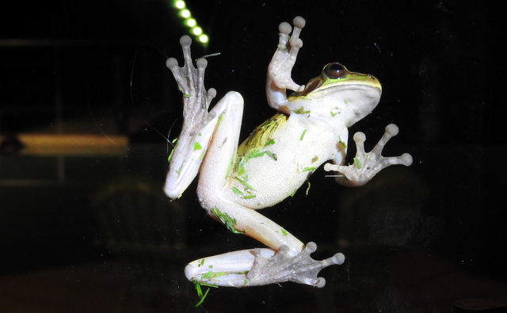
Etonnante photo
Profitant d'un moment d'inattention du chef suprême, je me suis remonté le moral en flânant dans la forêt. Notre sentier, nettoyé des affres du méchant Otto, reste très agréable à pratiquer, surtout que l'une des coulées de boue a fort heureusement dégagé une superbe vue sur le volcan Miravalles en plein milieu de la forêt. C'est saisissant! Presqu'autant que la coulée qui s'étale jusque dans notre jardin. Un couloir de 120m de dénivelé. J'évalue la possibilité d'y créer un tremplin de saut à ski pour entraîner les compétiteurs costariciens...
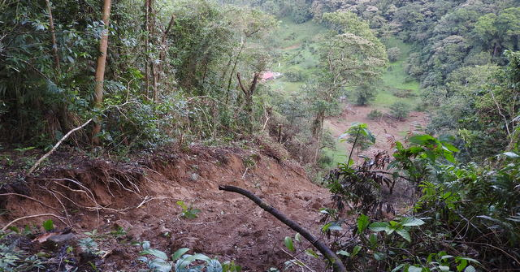
Les travaux de terrassement pour notre templin de saut à ski ont commencé.
Hier, il est encore tombé 20 cm de pluie en 24h. Pas de chance pour le nouveau pont fraîchement construit. Il s'est retrouvé en aval, déconstruit, si l'on peut dire... Avec une ténacité qui frise l'obstination, les habitants du cru ont recommencé l'édification d'un nouveau pont, dont le tablier est plus haut que celui du précédent (espérons-le).
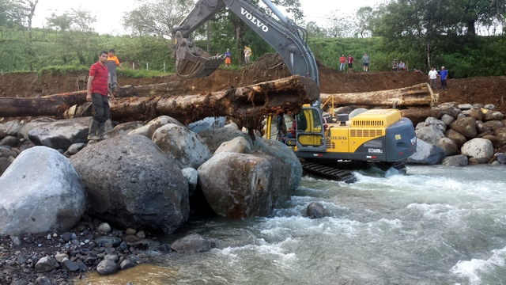
Le pont 3.0
Tout ce que la région compte comme glandeurs s'est retrouvé autour de la pelleteuse afin d'observer le travail. Nous aussi. On en a profité pour lancer les paris: combien de temps le pont 3.0 restera-t-il arc-bouté au-dessus de la rivière?
Nos aventures sont enfin disponibles en format électronique!!
Le tome 1 en version originale, avec photos: Les p'tites bites
et le tome 2 avec des conclusions édifiantes: 95° de latitude Nord
Et le Site Commercial: www.Finca-MeiTai.com
14/12/2016 - Me suis fait eu
Le 17 juin 2014, nous avons introduit une demande officielle afin d'obtenir le permis de résidence temporaire (2 ans) auprès du ministère de l'immigration (non sans peine d'ailleurs, c'est tout juste s'il ne fallait pas une traduction légalisée de mon certificat de 50m brasse en petit bassin).
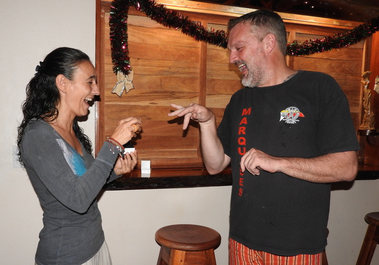
Non, non, vous ne rêvez pas
Comme convenu, l'administration dispose d'un trimestre pour statuer sur la requête. Et justement, aujourd'hui, le 14 décembre 2016, les 3 mois étaient écoulés et j'ai reçu l'assentiment officiel: me voilà autorisé à résider dans ce magnifique pays. Pour les enfants, la procédure devrait maintenant être automatique: étant dépendant de mon statut, ils obtiennent le droit de résidence de manière concomitante.
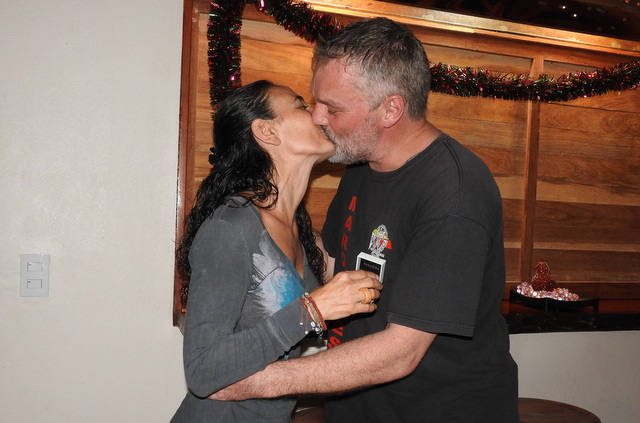
On a bien ri, on s'est bien embrassé...
Le cas de Cécile est moins clair... De l'aveu propre de notre avocat (confirmé par d'autres sources également), nos démarches seraient grandement facilitées si nous étions mariés. Il se fait que j'avais promis à Cécile, lorsque nous nous sommes rencontrés, que je l'épouserais quand elle aurait 45 ans, croyant par là avoir enterré le problème à tout jamais.
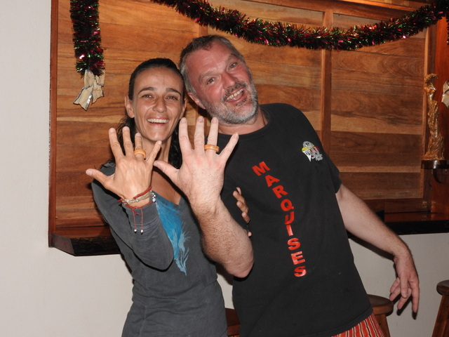
Et nous voilà mariés!
Eh bien voilà! Il ne faut pas faire de promesse en l'air, l'administration veille... Nous nous sommes officiellement mariés à San José (l'avocat s'est marié tout seul avec l'officier d'état civil et des procurations car nous n'y étions pas). Par contre, nous n'avons pas résisté au plaisir de nous faire une petite cérémonie en famille, au cours de laquelle nous avons échangé les alliances que j'avais personnellement réalisées dans un morceau de Tempisque, bois d'une dureté adamantine.
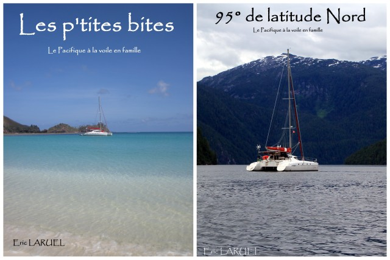
Le cadeau incontournable pour les Noëls virtuels... euh, non, le cadeau virtuel pour l'incontournable Noël!
J'en profite pour vous confirmer la sortie du tome 2 de nos aventures à la voile. Un récit haletant, bien illustré, et livré avec une conclusion d'une extrême originalité.
Nos aventures sont enfin disponibles en format électronique!!
Le tome 1 en version originale, avec photos: Les p'tites bites
et le tome 2 avec des conclusions édifiantes: 95° de latitude Nord
Et le Site Commercial: www.Finca-MeiTai.com
4/12/2016 - La guerre de l'eau
Voilà 10 jours que nous n'avons plus d'eau publique. C'est peut-être un détail pour vous. Mais pour moi, ça veut dire beaucoup. Ça veut dire que l'on ne peut plus faire la vaisselle, faire la lessive, prendre une douche et, accessoirement, boire (comme je l'ai déjà dit, j'évite de boire de l'eau car on ne sait jamais ce qu'il y a dedans, tandis qu'avec le vin ou le coca, on sait à quoi s'attendre). Tout cela peut paraître larmoyant mais essayez de ne pas vous laver (et vos vêtements non plus) pendant 10j... Ou essayez de vous lavez avec des bouteilles d'eau d'un litre, telles que nous les prodigue le secours populaire.
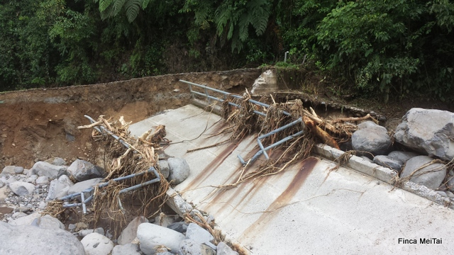
J'ai retrouvé le pont
En fait, j'exagère, car nous avions une réserve d'eau de 5000L, presque remplie avant l'ouragan. Et nous avions l'eau de la montagne pour remplir notre citerne. Mais ça, c'était avant. Avant qu'une pelleteuse ne viennent déboucher notre pont pour laisser passer l'eau par-dessous, plutôt que par-dessus. En effet, le stronsak qui manipulait l'engin n'a rien trouver mieux que de s'embourber en quittant le chemin, chose que je lui avait strictement interdit de faire (le dernier en date avait fait la même erreur et avait été puni de la même manière - c'est à croire que les gens du coin ne savent pas qu'après une forte pluie, les abords des routes sont glissants).
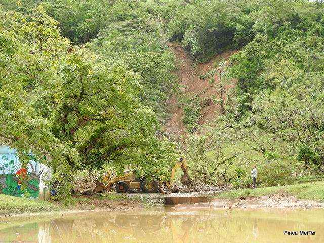
La pelleteuse en position stable sur l'allée (et moi devant, prêt à bondir pour étrangler l'opérateur)
Je l'avais également mis en garde sur le fait que, là (et je pointais du doigt un endroit précis), se trouvait un boîtier de dérivation électrique caché par les détritus et les canalisations d'eau enfouies. Qu'importe! Ce labekak a tout niqué en essayant de sortir sa pelleteuse. Résultat: l'opération débouchage s'est soldée par un fiasco boueux qui nous a coûté une fortune et nous a définitivement privé d'eau, les tuyaux d'arrivée d'eau de ville et de montagne étant brisés et remplis de boue. Heureusement, les tuyaux de sortie sont souples et n'ont pas cédé.
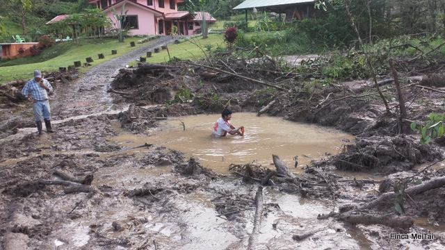
Abran cherche l'entrée du canniveau bouché...
Gracias a Dios (et à la quincaillerie du village), j'ai trouvé un tuyau d'arrosage et de quoi faire la jonction tube/tuyau et j'ai pu alimenter la citerne en eau de source, juste avant que n'arrivent nos visiteurs du jour. D'après nos voisins, l'eau publique devrait revenir demain (si Dios quiere quand même), ce qui me donnera l'occasion de faire un peu de plomberie supplémentaire pour réparer le tuyau d'arrivée à la citerne (en espérant qu'il ne soit pas rempli de boue comme celui d'arrivée de la montagne).
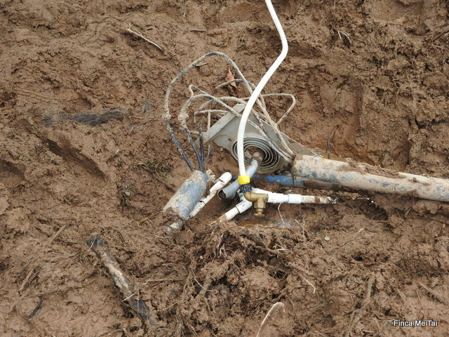
Le boitier électrique, les canalisations et mes bidouilles
En parlant d'eau, hier je suis allé faire un tour du côté du Zapote, la rivière qui borde notre propriété. J'ai découvert les restant de feu le pont. En cherchant un peu, j'ai aussi trouvé son remplaçant, moins ambitieux certes mais très efficace, du moins pour les piétons. A l'heure où j'écris ces lignes, ces diables de Ticos sont parvenus, à grand renfort de pelleteuses, à se frayer une nouvelle route à travers les gravats qui forment le lit de la rivière... Mieux encore: ils ont réussi à jeter des troncs en travers du cours d'eau et à refaire un pont de fortune que même les voitures peuvent emprunter. Tout cela sans l'aide de personne (ou presque) et sans aucun ingénieur. Ils m'épatent.
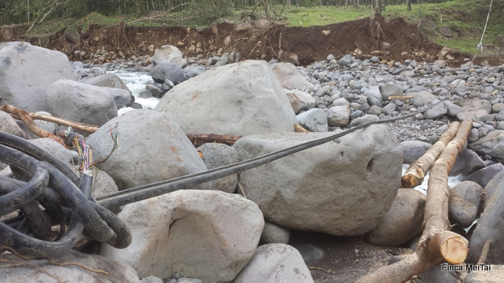
Le nouveau pont piétonnier, dont main courante est faite de l'ancien câble téléphonique
Le pont est fait des troncs emportés jusqu'ici par la crue (certains en provenance de notre finca d'ailleurs). Une pelleteuse a servi à les mettre en travers de la rivière. Ils ont ensuite été solidarisés avec du câble téléphonique avant d'être recouverts de pierraille.
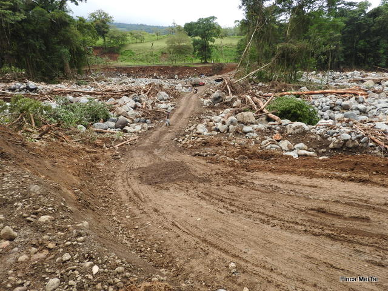
La route (provisoire) a été tracée et réalisée en moins de 3 jours
Bref, nous ne sommes plus au bout d'un cul de sac. Gageons que les fonds seront débloqués sous peu pour permettre la construction d'un vrai pont - celui-ci ne tiendra guère-, ce qui nécessite d'aménager le lit du cours d'eau et ses berges pour éviter que cet épisode malencontreux ne se reproduise...
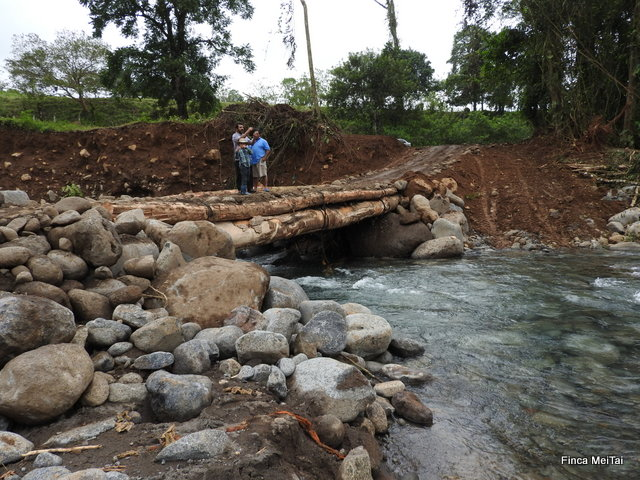
Moins de trois jours également pour batir ce pont provisoire mais déjà carrossable
Tenez-vous bien: j'ai gardé le meilleur pour la fin. Sur le plan cadastral, le rio marque la limite de notre propriété. Comme il s'est éloigné de 50m au moins sur une distance de près d'un km, notre finca s'est agrandie de 5Ha. On a tout plein de gros rochers en plus. C'est pas beau ça? Sauf que le petit spot de baignade que j'avais déniché le long du sentier en forêt, bien à l'abri des regards et entouré de végétation luxuriante, est maintenant au milieu d'un champ de pierres. Finies les baignades à poil...
Nos aventures sont enfin disponibles en format électronique!!
Le tome 1 en version originale, avec photos: Les p'tites bites
et le tome 2 avec des conclusions édifiantes: 95° de latitude Nord
Et le Site Commercial: www.Finca-MeiTai.com
28/11/2016 - Accident d'Otto - Le village
La finca a certes subi d'importants changements de relief, elle n'en demeure pas moins opérationnelle, prête à accueillir les visiteurs, même si notre zone de guerre a rebuté les derniers clients qui ne se sont jamais montrés. Par contre, la pluie torrentielle qui nous a arrosé ne s'est pas limitée à la seule finca, elle a également alimenté les bassins hydrographiques du Zapote et du Bijagua, les 2 grandes rivières qui serpentent dans la région.
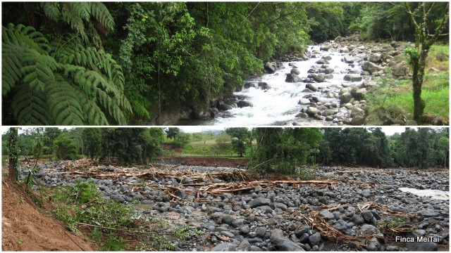
Le Zapote avant... et aujourd'hui
Le résultat ne s'est pas fait attendre: les ruisseaux se sont transformés en torrents et les rivières en fleuves dont le lit trop exigu s'est vite révélé insuffisant. Le Zapote qui borde notre propriété et dont le bassin couvre le versant nord du Miravalles s'est mis à charrier des rochers avec une telle frénésie que le sol s'est mis à trembler. Durant 2 heures, la maison, pourtant distante de 400m du lit de la rivière, s'est également mise à ronronner dans un grondement effrayant. Avec la pluie qui martelait le zinc du toi, le vacarme était épouvantable, sans compter l'absence totale de lumière, l'électricité ayant été coupée en ce début de nuit.
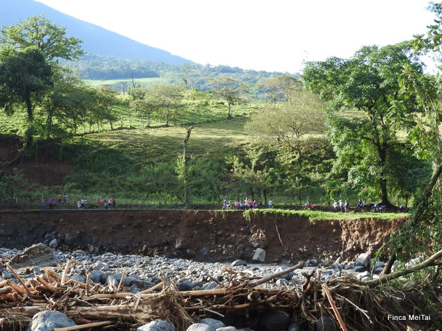
Les habitants de Zapote, désormais isolés de Bijagua
Ce matin, après avoir dégagé le chemin de la finca pour pouvoir passer en voiture, nous partîmes en exploration dans la ville, en commençant par le pont sur le Zapote, au coin de notre finca. Là où, hier encore, nous passions en voiture, à pied ou même à cheval, s'étend désormais un champ de rochers de 150m de large... Du pont, aucune trace. Le village de Zapote qui se trouve sur l'autre rive est coupé de Bijagua, ce qui ne manquera pas de poser de gros problèmes d'avitaillement et de logistique, pour les collégiens condisciples de nos enfants notamment. En plus, nous sommes dorénavant la dernière propriété au fond d'un cul de sac...
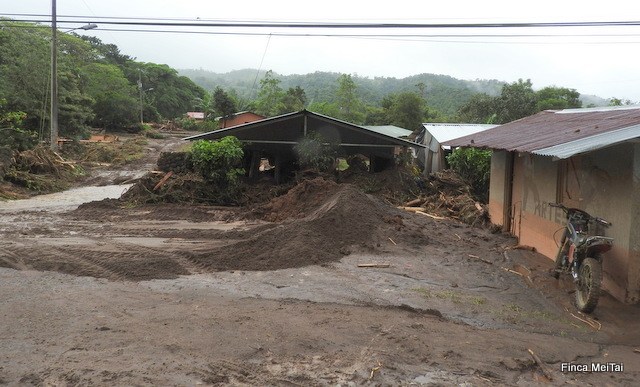
Certaines maisons sont littéralement remplies de boue
Nous descendîmes en ville pour découvrir une vision apocalyptique: le Rio Bijagua est également sorti de son lit, inondant toute la partie basse du village. Dans la vallée, une coulée de boue a balayé tout sur son passage: arbres, poteaux électriques, voitures et maisons. 4 personnes ont semble-t-il laissé la vie dans ce torrent boueux. Bien plus nombreux sont les sans-abri qui ont tout perdu. Heureusement, la solidarité n'est pas un vain mot par ici: toutes la journée, les villageois se sont affairés pour tenter de récupérer ce qui était possible, de dégager les voitures et les maisons, de rouvrir les canalisations d'eau. La compagnie d'électricité, l'I.C.E. a travaillé jour et nuit pour rétablir le courant dans Bijagua, alors que les poteaux avaient été emportés par dizaines. 48 heures après le drame, rares sont ceux qui n'ont pas retrouvé eau et électricité.
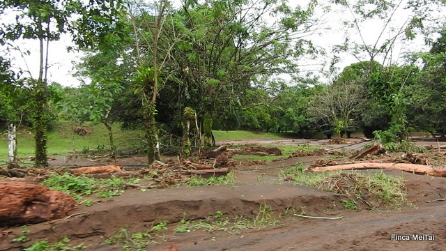
L'eau a tout balayé
Le village a vraiment changé de visage et, d'ores et déjà, ses habitants ont pour la plupart retrouvé le sourire, fidèles à la réputation des Ticos: Pura Vida! Quant à nous, pour ce qui est de l'eau potable, connectés à l'aqueduc de Zapote, notre canalisation est dorénavant 4 km en aval et ne risque pas d'être réparée dans les jours qui viennent. Nous avons donc mis à profit une éclaircie pour nettoyer notre captage de fond en comble. Grâce à un sens de l'anticipation hors du commun, nous avons en effet pensé, lors de la construction, à brancher la maison sur l'eau de la montagne, en cas de rupture de l'approvisionnement public, ce qui risque d'être fort utile dans les mois à venir.
Et le Site Commercial: www.Finca-MeiTai.com
27/11/2016 - Accident d'Otto - La finca
Oui, je sais, c'est un peu facile mais nous sommes encore sous le choc. Dans la nuit du 24 novembre, l'ouragan Otto a décidé de traverser le nord du Costa Rica, en passant par chez nous. Tout le monde le sait, la mer est à l'ouragan ce que la chevelure est à Samson : l'origine de la puissance. En toute logique, Otto aurait dû perdre sa force sur la terre ferme et, en effet, c'est bien ce qui advint. Mais la quantité de pluie charriée n'a pas manqué de tomber, en particulier sur le Miravalles. Sur notre propriété, ce sont 37 cm d'eau qui sont tombés en 3h...
.JPG)
Les arbres ont fait du ski
.JPG)
Les chevaux ont survécu par miracle
Vers 18h, Cécile est allée chercher Kenya à Bijagua et, hormis la pluie battante, rien ne laissait présager le cataclysme. Vers 19h, trouvant l'averse un peu longue, je m'aventurai dans le jardin avec une lampe torche, afin de vérifier l'état des étangs. Là non plus, rien ne semblait anormal. Sans électricité, sans téléphone, il ne nous restait plus qu'à aller dormir.
.JPG)
Les vaches continuent à brouter
.JPG)
Mélange de boue, pierres et arbres
Le lendemain, Cécile ouvrit un oeil, et cela lui suffit pour saisir d'un coup l'étendue du désastre. Sans doute affaiblie par le tremblement de terre de juillet, la montagne présentait des fissures qui se sont remplies d'eau avant de s'écrouler, fort heureusement dans les creux qui entourent la maison. Curieusement, nous n'avons rien entendu durant la nuit. De grandes coulées de boue ont dévalé les versants, charriant pierres et détritus végétaux jusqu'aux pieds des pentes. Fort heureusement, ces glissements n'ont eu aucune conséquence néfaste, si l'on excepte le fait que le bétail ne peut maintenant plus accéder à cette partie de la finca. Les prairies sont maintenant couvertes de troncs, dont certains semble-t-il pourront être utilisés. Maigre consolation...
.JPG)
Une coulée est venu couvrir notre allée
.JPG)
La coulée vue de l'autre côté
La coulée qui couvrait notre allée nous empêchait de sortir. Nous avons donc oeuvré en famille afin de dégager un chemin pour la voiture. Il faudra qu'on trouve un moyen de (re)faire passer l'eau sous le pont car, pour l'heure, la boue ayant tout bouché, l'eau dévale sur l'allée, ce qui ne manquera pas, à la longue, de la détériorer jusqu'à la rendre impraticable.
.JPG)
Sidney le petit plaisantin
.JPG)
Contrairement aux apparences, Sidney a vraiment travaillé
.JPG)
Une affaire de famille
.JPG)
Quand je vous disais que Sidney travaillait
.JPG)
Même Kenya nous a aidé avec ses petits bras chétifs
En outre, l'apport d'eau s'est révélé trop important pour l'évacuation du lac inférieur. Comme on pouvait s'y attendre (mais on ne s'y attendait pas, en fait), le barrage a cédé et le lac s'est complètement vidé... Au vu de la brèche, il n'est pas envisageable de faire une réparation de fortune. Il nous faudra faire venir une pelleteuse, des rochers et, naturellement, de la terre pour combler le barrage, ce que nous ne pourrons pas faire avant mars et le début de la saison sèche.
.JPG)
Vue du lac, avant et après
.JPG)
Notre barrage n'a pas tenu
Et la cacao? Je vous avais indiqué que notre première cabosse était apparue sur l'un des arbustes. Je vous avais mentionné combien nous étions fiers d'avoir réussi à faire pousser près de la moitié de nos plantes dans des conditions difficiles. J'étais persuadé que le plus dur était fait... Eh bien, je n'avais pas pensé à tout: le cacao, planté sur un terrain très abrupt, est maintenant en grande partie dans la prairie en bas, avec les tonnes de terre qui se sont décrochées des flancs de la colline. Retour à la case départ, les dollars et l'énergie dépensée en moins... Quant au sentier que nous venions d'inaugurer dans la forêt primaire, il nous est impossible d'y accéder à l'heure actuelle (et il nous semble fort dangereux de s'aventurer dans la forêt en ce moment), mais vu ce qui s'est passé dans le cacao et sur le versant nord, il n'y a que peu de chance que le versant sud ait été épargné. On peut légitimement supposer que le sentier a été balayé, si bien que, là aussi, il va falloir recommencer à zéro...
.JPG)
Le cacao, pour un peu, je me mettrais bien à chialer
Et le Site Commercial: www.Finca-MeiTai.com
8/11/2016 - L'été s'achève
Au début du mois de novembre arrivent les premiers oiseaux migrateurs, fuyant les terres gelées du nord et les white walkers qui vivent au-delà du Grand Mur. Faisant fi des gardiens de la Night Watch, il rejoignent nos riantes contrées. D'un coup, nos arbres se peuplent d'oiseaux multicolores gazouillant dans un bonheur sans fin.
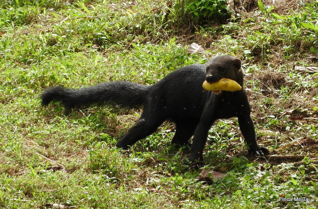
Un Tolomuco (Eira barbara)
En plus, nos bananiers donnant à plein, nous croulons sous les régimes, tant et si bien que même l'afflux de visiteurs n'arrive pas à tarir la source. Suivant les conseils des locaux, nous dispersons des régimes ça et là, autour de la maison, afin de nourrir les animaux sauvages de la forêt.
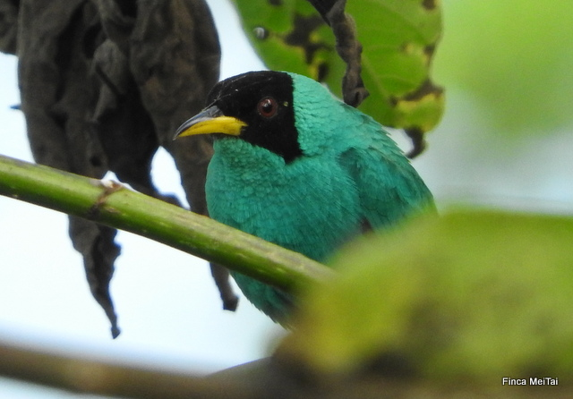
Un petit oiseau tout vert nous nargue dans les papayers (Chlorophanes spiza)
Au début, telle soeur Anne, nous ne voyions rien venir. Et pourtant, ce matin, nous vîmes arriver tranquillement une petite famille de Tolomucos. Ils se jetèrent sur nos bananes comme la misère sur le monde et, en un clin d'oeil, ils avalèrent tant de ces délicieux fruits qu'ils eurent toutes les peines du monde à repartir, le ventre alourdi par tant de victuailles. Cela ne nous a pas empêché de les mitrailler à partir de notre poste d'observation sur la terrasse.
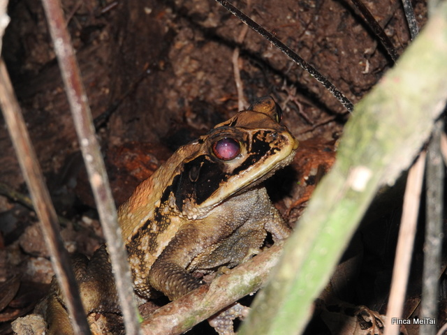
Un crapaud, moins élégant mais très photogénique
Même la forêt semble se réveiller et chaque incursion que nous y faisons, profitant pleinement de notre nouveau sentier, nous permet permet de découvrir la richesse des lieux. Les visiteurs qui ont eu le privilège de découvrir notre sentier sont aux anges: la promenade au sein de la forêt primaire remporte un franc succès.
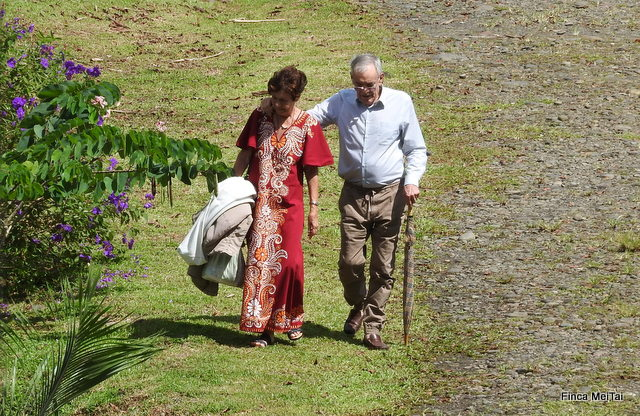
Thalou et Roger
Quant aux parents, après un mois passé dans notre petit paradis, ils ont repris, non sans quelques regrets, le chemin de la plate Belgique. Une fois de plus, ils ont pu apprécier la tranquillité des lieux. Gageons qu'ils reviendront y goûter encore l'année prochaine...
Et le Site Commercial: www.Finca-MeiTai.com
13/10/2016 - Thalou et Roger, le retour
Je n'ai malheureusement pas de preuves photographiques pour le moment mais je vous confirme que Monsieur et Madame Van W., les parents de Cécile, nous ont rejoint pour la deuxième année consécutive.
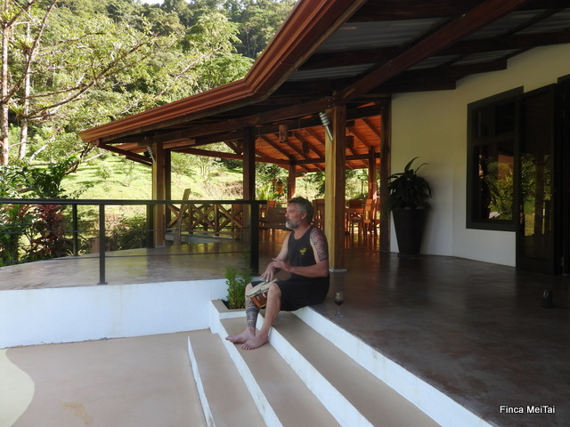
La vie est dure sous les tropiques
Notre finca est tellement magnifique, ma cuisine si succulente et la météo si agréable qu'ils n'ont pas pu s'empêcher de revenir dans notre petit paradis. A moins que ce ne soit pour passer quelques bons moments avec leur fille....
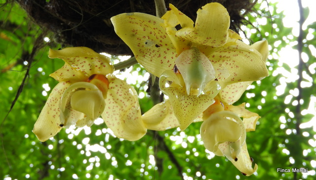
Une orchidée sauvage fleurit dans le jardin
Quoi qu'il en soit, nous revoilà réunis pour profiter de la vie en papotant sur la terrasse. Comme on avait déjà tout visité l'année passée, on peut se contenter de rester tranquillement dans notre domaine...
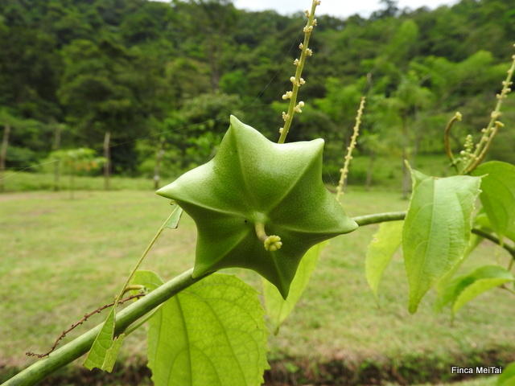
Une baie de Sacha Inchi (Plukenetia volubilis)
Enfin, quand je dis 'tranquillement', il faut quand même préciser que, pendant que les enfants déballaient les cadeaux apportés par Thalou, de mon côté, je déballais mes semences (livrées par avion via Rabit Airlines) et je les portais en terre sans tarder. Il faut que mon potager s'étoffe de quelques légumes typiquement locaux comme les tomates ou les courgettes.
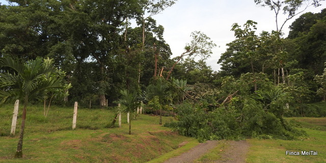
Un Pochote est tombé sur l'allée
D'ailleurs, notre finca brillant par sa diversité, je pourrai bientôt réaliser ma première cueillette de Sacha Inchi, une graine dont l'huile est riche en Oméga-3, dont l'ingestion me permettra de vivre 150 ans, sauf si je continue à fumer un autre produit de la finca: le tabac (et non la marijuana, comme certains petits comiques pourraient le penser) dont les feuilles sont enfin sèches à point.
Et le Site Commercial: www.Finca-MeiTai.com
28/09/2016 - Voilà, c'est fait
3.400m de longueur, 312m de dénivelé positif, 2 gués, une pelletée d'arbres gigantesques, une cascade et 12 panneaux en bois polis de mes blanches mains. Le sentier dans la forêt est balisé, validé et terminé. Yapluka observer la réaction de nos visiteurs pour améliorer quelques détails mais nous sommes d'ores et déjà satisfaits de ce sentier, unique dans la région.
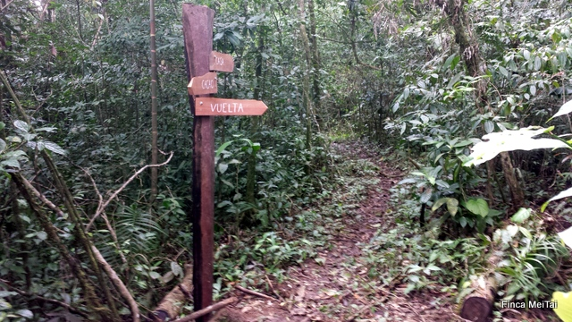
Des indications lisibles et explicites
Autre exploration que nous menons en ce moment: la gastronomie locale. Dès notre arrivée, nous avions compris, grâce à une clairvoyance relevant du surnaturel, que le repas typique (et unique) du Tico est le Arroz/Frijoles, à savoir riz et haricots. Ils en mangent le matin, le midi et le soir. La seule variante est la présence (ou non) de poulet, de tomate (ou non), de banane (ou non) et de natilla (ou non). La natilla, c'est ici ce qui ressemble le plus au fromage blanc. Moi, j'aime beaucoup l'arroz con frijoles. Mais malgré mes efforts, je n'arrive pas à en manger 3 fois par jour. Le matin, l'arroz con frijoles s'appelle Gallo Pinto. Et, c'est difficile à croire, mais c'est bon, surtout avec un avocat bien mûr. Mais voilà, il faut admettre qu'après une becquetée de frijoles à 8h du mat, on a plus trop envie d'en reprendre à midi.
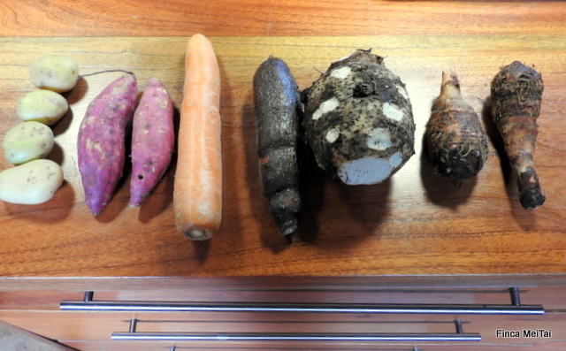
De droite à gauche: Tiquisque (et non pas pilons de poulet), Malanga, Yucca, Carottes, Patates douces et Patates tout court
Après 2 ans, nous découvrons à présent d'autres spécialités locales. Hier, j'avais imaginé faire des légumes-racines rôties et j'étais bien décidé à en sortir un maximum de la finca. J'ai donc déterré quelques Tiquisque (dont question dans le billet précédant) et du Malanga, autre tubercule poussant sauvagement dans la finca. Après 75 minutes dans le four, assaisonnés de natilla au persil, et accompagnés d'un rôti de boeuf braisé, les racines étaient délicieuses. Curieusement, elles ont toutes un petit je-ne-sais-quoi qui leur confère un goût spécifique.
Et le Site Commercial: www.Finca-MeiTai.com
23/09/2016 - Petits travaux de printemps
Techniquement, on est en été mais, ici, les saisons sont mélangées. Pas plus tard qu'hier, c'était la saison des pluies. Maintenant il fait grand soleil... J'ai donc décidé que c'était le printemps. Et, comme par hasard, un héron tigré est venu chasser la sardine sous notre nez, alors que nous déjeunions en terrasse.
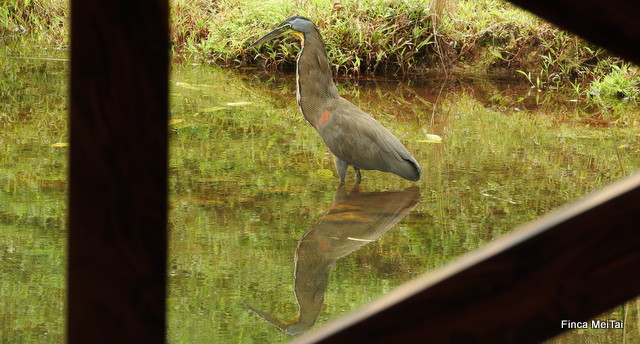
Tapon! Tapon!... Héron, héron, petit! Pas tapon...
Mais cela ne nous a pas empêché de faire, une fois de plus, un petit tour dans la forêt pour éprouver notre nouveau sentier et notre nouvelle vasque d'eau tourbillonnante sur la rivière sauvage. Comme prévu, c'est magnifique! Et pouvoir se baigner à poil dans une rivière sauvage sans quitter sa propriété, ça c'est du luxe!.
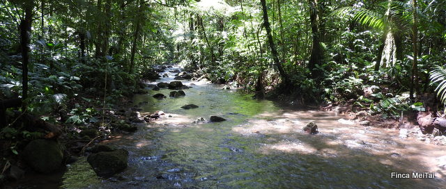
Calme sylvestre
Les muchachos ont vraiment fait du très bon travail. Il ne me reste plus qu'à flécher le parcours, creuser quelques caniveaux et décaisser quelques marches aux endroits pentus et le chemin de quelques 3.5 km et 330m de dénivelé positif sera accessible aux visiteurs par milliers. En plus, la fin de la ballade se fait par le parterre d'héliconias, ce qui est non seulement merveilleux mais surtout l'occasion d'en ramasser quelques uns pour les disposer sur le deck en guise d'ornementation (quand il pleut fort comme la semaine passée, ils ont tendance à tomber misérablement sur le sol où ils pourrissent bêtement si on ne les enlève pas).
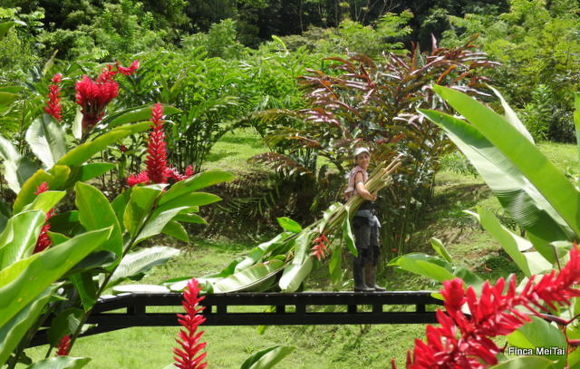
Cécile et les héliconias géants
Dans un autre registre, nous avons décidé de nous lancer dans la permaculture. J'y reviendrai plus longuement dans un prochain billet mais comme le terme même m'a l'air un peu fourre-tout et très à la mode, je me permets déjà de l'utiliser. En fait, on a remarqué que poussait dans la reforestation, en plus des arbres que l'on y a disposés - évidemment - une plante appelée Tiquisque, du genre des Xanthosoma, dont les représentants sont aussi appelés Malanga ou Taro. Bref, il s'agit d'une plante à larges feuilles dont les racines forment des tubercules qui se mangent (et coûtent très cher au marché, jusqu'à 4 fois le prix des patates).
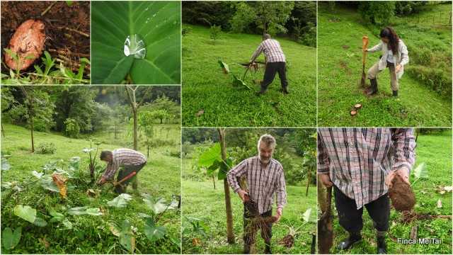
Culture du Tiquisque
Depuis qu'on a reforesté, on a aussi empêché le bétail de brouter dans la zone, permettant au Tiquisque de pousser à son aise. Du coup, on en a profité pour en déterrer un ou deux, dont on a mangé les tubercules. On a aussi découpé la base de la plante en rondelles que l'on a plantées grossièrement le long du ruisseau. Y a plus qu'à attendre et nous aurons encore plus de Tiquisques qui grandiront dans la prairie. Et en quoi est-ce de la permaculture? Ben on donne juste un petit coup de pouce à ce qui existe déjà. On ne change pas l'écosystème et on pratique la polyculture: sylviculture avec notre reforestation et agriculture avec nos Tiquisques. Y a plus qu'à y mettre quelques Gandules (Cajanus cajan) qui sont pour l'heure en gestation dans ma pépinière personnelle et on aura une première zone permaculte dans notre finca.
Et le Site Commercial: www.Finca-MeiTai.com
12/09/2016 - Orage
O Désespoir. Eau Météo pourrie. N'ai-je donc tant vécu que pour voir toute cette pluie? Et ne suis-je donc venu visiter cette contrée, que pour voir en une heure autant d'eau s'écouler?
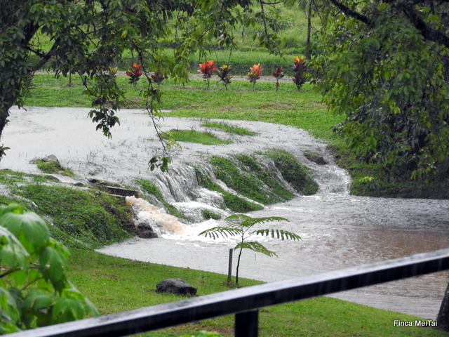
Le lac est trop rempli, il déborde
11 cm d'eau en 1 heure lors d'un orage mémorable. Ca fait 110L par m². Pour avoir une idée, cela signifie que rien que sur la maison il est tombé 30 m³ d'eau, de quoi remplir la moitié de la piscine (que j'ai mis plusieurs jours à remplir avec un tuyau).
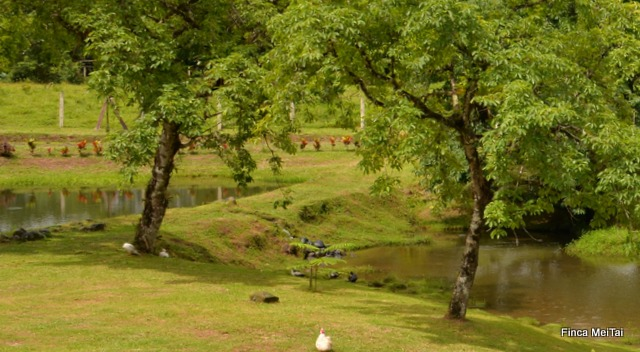
Le même en temps normal
Autant dire que toutes les résurgences alentours se sont réunies pour transformer nos étangs en un grand lac. Le ponton de pêche, d'ordinaire accessible grâce à en petit sentier, s'est retrouvé au milieu des flots, tel un radeau.
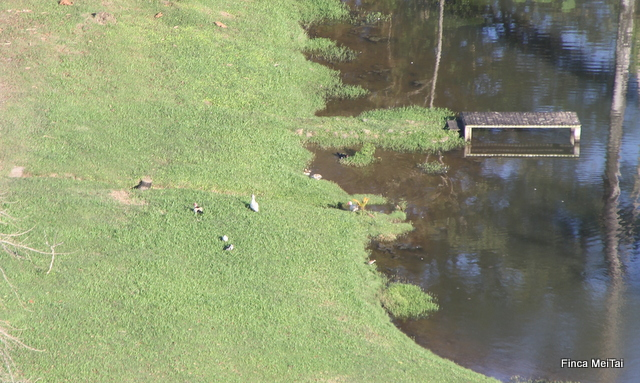
Le ponton par temps sec
Le tonnerre et la pluie ont cessé presque simultanément. Curieusement, il n'est resté pratiquement aucune trace des eaux. En moins de 2 heures, les étangs avaient retrouvé leur forme d'antan. Le débit des rus restait important mais, dans l'ensemble, seul un oeil aguerri pouvait percevoir les stigmates du déluge.
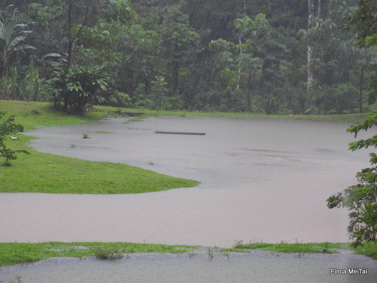
Le ponton aujourd'hui
D'ailleurs, dès le soir, nous avions droit à un magnifique coucher de soleil dans un ciel lavé de tout nuage. Curieux quand même qu'il suffise de grimper 500m pour avoir une météo montagneuse...
Et le Site Commercial: www.Finca-MeiTai.com
02/09/2016 - Bon AnniverSyr Daria
Quand je pense que ma petite fille chérie a déjà 14 ans... Je la revois encore toute petite dans mes bras, il y a 2 ou 3 ans. C'est incroyable ce que les voyages peuvent créer comme distorsions dans le continuum spatio-temporel. Enfin, malgré mon incrédulité, il semble qu'effectivemment, par quelque tour de passe-passe relevant de la sorcellerie, ce 2 septembre 2016 était l'occasion de célébrer le XIVéme anniversaire de la surection de Cacahuète dans ce monde merveilleux.
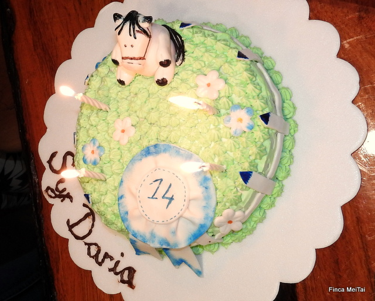
Le gâteau, oeuvre de Maeva
Nous avons mangé un excellent gâteau confectionné par Maeva, la fille des 'autres' Belges de Bijagua, et avons dégusté un cidre millésimé avant que Syr Daria n'ouvre ses cadeaux. Ce fut l'occasion d'évoquer tant de bons souvenirs comme la fois où Syr Daria a pu nager avec les otaries, ou comment elle avait fait le tour du lagon d'Aitutaki sur la mobilette de Marcus... C'était fantastique mais nous avions un programme de festivités bien organisé, aussi avons-nous poursuivi notre chemin jusqu'au Barrigon, la pizzeria du coin avant de revenir à la maison regarder un bon film en famille.
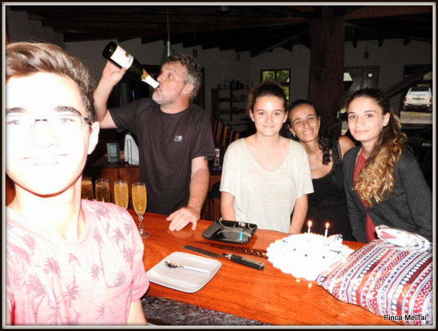
C'est du cidre, si, si!
Le lendemain, Syr Daria était impatiente de profiter de l'occasion qui lui était donnée, en ce jour anniversaire, de pouvoir monter Anis, son cheval, pour la première fois. En effet, la pouliche de 2 ans est maintenant débourée et presqu'aussi docile qu'un étalon (c'est une femelle quand même). Syr Daria a a-do-ré sa première rando.
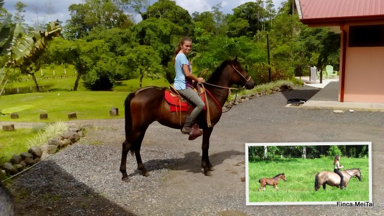
Syr Daria et Anis (et la petite Anis, derrière sa maman, il y a tout juste 2 ans)
C'est étrange. Quand Anis est arrivée avec sa maman à la finca, il y a 2 ans, elle avait la taille d'un grand chien. Et maintenant c'est une belle jument pleine de vie! Cela nous fait donc 3 juments à disposition pour organiser des promenades équestres avec nos visiteurs.
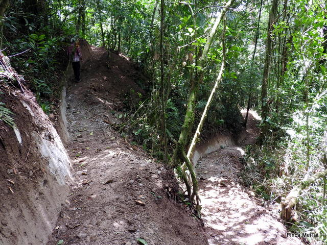
Les lacets s'accumulent
A propos de promenade, je vous tiens au courant des progrès du sentier dans la jungle (je suis sûr que ça vous passionne): ça avance. La pente est raide, les virages nombreux et le décor grandiose. Dans quelques semaines, les visiteurs se battront pour parcourir cette boucle en compagnie d'un guide local.
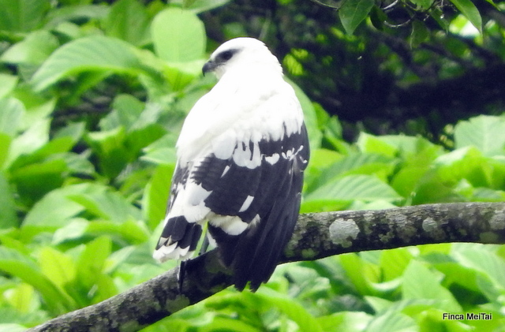
Un épervier blanc
La preuve: ce magnifique épervier venu d'un autre monde pour observer nos travaux.
Et le Site Commercial: www.Finca-MeiTai.com
22/08/2016 - Un peu de topographie
Aujourd'hui, il faisait beau dès potron-minet. Aussi ai-je décidé d'emprunter le chemin dans les bois, lequel se déroule sur 2400m, afin d'en vérifier l'état. Les enfants se réjouissaient, croyant être débarrassés de moi pour quelque temps. C'était sans compter sur ma conception dictatoriale de la famille: j'ai obligé mes deux filles à participer à la ronde. Il faut dire que nous sommes installés depuis près de 18 mois dans la finca et qu'elles n'ont pas encore jugé utile (ou pas eu le temps, je ne sais plus) de parcourir le sentier. Comme j'avais déjà usé de mes pouvoirs impériaux sur Sidney le mois passé, je l'ai laissé à la maison...
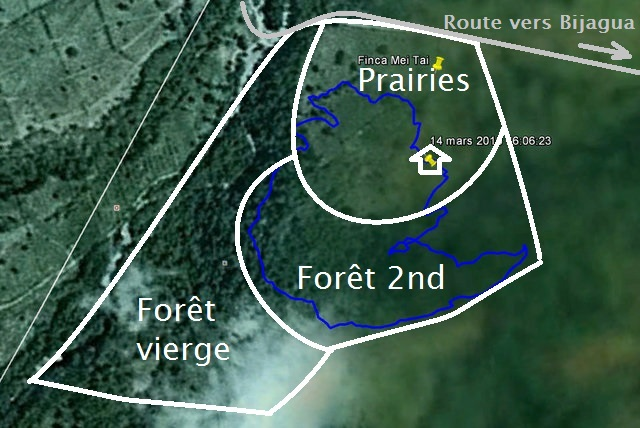
La finca, vue de Google Earth
Pour ceux qui s'interrogent sur la découpe façon boucher du plan ci-dessus, je précise qu'il s'agit d'une vue satellitaire de notre finca, séparée grossièrement en 3 parties: les prairies, relativement plates, la forêt secondaire, jadis prairie également, au relief beaucoup plus accidenté, et, enfin, la forêt vierge, parcourue par des cours d'eau et très pentue. La ligne bleue est la trace GPS du parcours sur le sentier qui suit la crête au pied de laquelle la maison est construite.
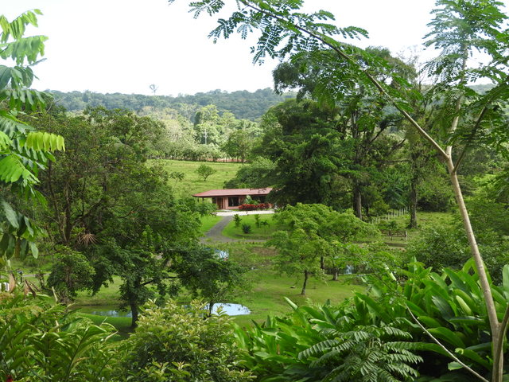
C'est tout vert
Le sentier, que nous avons décaissé à la pelle, serpente de la maison jusqu'à la partie sommitale de la finca, 130m plus haut. Lors de cette ascension, il n'est pas rare de croiser l'un ou l'autre serpent endormi sur lui-même dans les feuilles mortes. Parfois, on peut saluer un paresseux ou une bande de singes hurleurs. Et, évidemment, on y trouve également toutes sortes de grenouilles, toucans, grillons, lézards, pavón, etc.
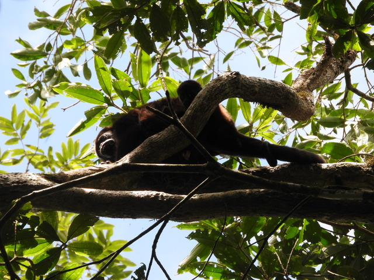
Un singe hurleur nous épie
Du sommet de la finca, on voit très bien les volcans alentours et même la chute d'eau sur le Rio Bijagua. Le sentier suit la crête pratiquement jusqu'à son terme, avant de revenir vers la maison en traversant les champs de cacao. Les arbustes poussent à une vitesse impressionnante: après 2 ans, certains ont déjà 1m de hauteur. Les bananiers qu'on y a plantés pour faire de l'ombre et ralentir le vent poussent beaucoup plus vite.
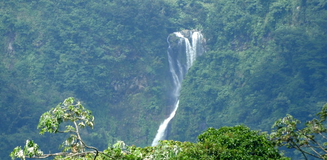
La chute Bijagua
Dès aujourd'hui commence l'élaboration du 2ème sentier: il s'agit d'une boucle permettant d'explorer la forêt primaire et ses arbres gigantesques. Longue de 1200m, cette boucle viendra s'ajouter aux 2400m déjà existants, et permettra d'accéder à une petite cascade au sein de la forêt ainsi qu'au Rio Zapote qui passe dans la propriété. Ce sera l'occasion pour les plus téméraires de se jeter dans les bains à bulles naturels. Le traçage du sentier est déjà réalisé, reste à le décaisser et à l'équiper de manière rudimentaire, afin de permettre de le parcourir sans (trop) se mouiller les pieds...
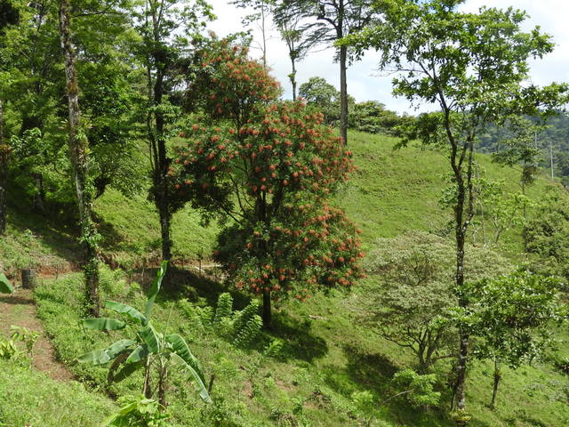
Le champ de cacao
Petite précision: sur la photo ci-dessus, l'arbre rouge est un cirri, les autres sont des Laurels, des Maderos Negros, un Nispero et des trucs. En bas, légèrement à gauche, vous distinguez facilement un bananier. A l'avant plan, devant et à gauche du bananier, ce sont deux arbustes de cacao... Le chocolat, c'est pas pour demain!
Et le Site Commercial: www.Finca-MeiTai.com
04/08/2016 - Que fait-on avec les visiteurs? On va voir le Rio Celeste
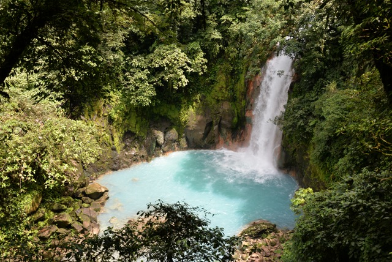
La chute d'eau bleue
Notre finca se situe entre les volcans Miravalles et Tenorio, un lieu idéal, en quelque sorte. Sur les flancs de ce dernier (le Tenorio donc) coule un rivière paisible qui serait passée totalement inaperçue si, pour une raison que seuls les scientifiques de haut niveau peuvent expliquer, elle n'était pas bleue. D'un bleu laiteux en fait. Certains avancent des explications mêlant alchimie et esprits malins, moi je dis que ce sont des réservoirs à colorant dissimulés dans la forêt qui lui confèrent cette couleur. Cette idée m'est venue quand j'ai constaté que, plus en amont, la rivière est limpide (et, comme par hasard, depuis le dernier tremblement de terre, dont question antérieurement, on ne peut pas remonter la rivière jusqu'au moment où, subitement, elle devient azur). Ca m'a donné une idée... Puisque le bleu est déjà pris, je pourrais utiliser du rouge et créer ainsi une attraction mondiale dans ma finca (où les rus ne manquent pas - mais les chutes d'eau si).
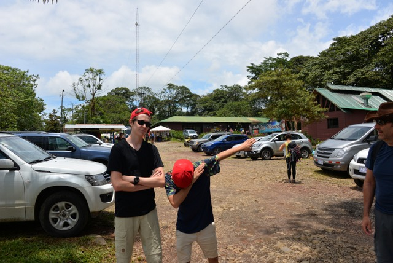
Les jumeaux (?)
L'entrée du parc est à 30 minutes de route (9 km quand même) de la finca, si bien qu'il nous fut particulièrement aisé d'y accéder, malgré l'affligeante bêtise des ados qui nous accompagnaient (de leur plein gré, rassurez-vous). Ca n'a rien à voir mais il suffit de regarder la photo ci-dessus pour comprendre le bien-fondé de mes assertions.
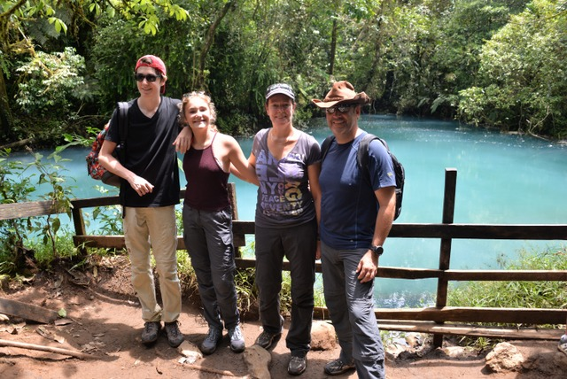
La famille Mulders au grand complet
La chance était décidémment avec nous car nous avons cheminé à l'ombre de la forêt tout en profitant de la lumière resplendissante du vaillant soleil équatorial. La rivière fut bleue, ce qui peut paraître anodin, mais il arrive qu'en cas de pluie, le bleu tourne au brun. Et comme il pleut parfois par ici...
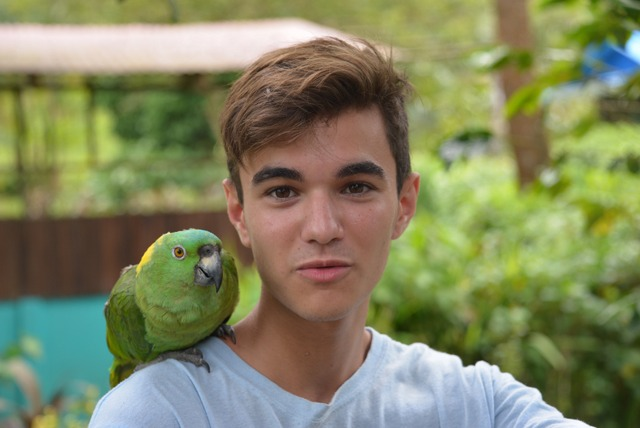
Sidney et sa perruche caquettante
La visite du parc dura deux heures et une chique, au terme desquelles nous mîmes le cap sur un petit restaurant fort sympathique. Une fois de plus, l'occasion fut donnée à Sidney de montrer l'étendue de son narcissisme (n'ayant d'égal que celui de la perruche).
Les Héliconias de la finca (cherchez l'intrus)
Après on est rentré et Joëlle à mitraillé les héliconias du jardin. C'est beau hein? Puis on a mangé tous ensemble, dormi (mais pas tous ensemble), re-mangé tous ensemble, puis nos amis sont déjà partis. Quel dommage, il nous restait encore le Rincon, la Cano Negro, les Llanos de Cortes, les eaux thermales, las Pumas, le rafting sur le Rio Corobici, le tubing sur le Rio Tenorio et, bien évidemment, les ponts suspendus de Bijeau. Enfin, c'est pas plus mal car ils seront dès lors obligés de revenir (sauf Ludéric qui sera trop vieux pour partir avec ses parents - mais il pourra venir avec sa petite amie...)
Et le Site Commercial: www.Finca-MeiTai.com
03/08/2016 - Que fait-on avec les visiteurs? Rien
Autour de la piscine
Si, si. C'est possible. On peut ne rien faire autour de la piscine. C'est ce qu'on a fait en ce magnifique 3 août.
Les nymphettes
On s'est contenté de lézarder au bord ou dans la piscine.
Le Denis
Denis a fait du yoga.
Le Eric (observez l'imperceptible effort pour paraître plus mince)
Eric a sorti son costume des Tonga.
Lalila
Lila est partie chasser des images dans le jardin d'Héliconias.
Et le Site Commercial: www.Finca-MeiTai.com
02/08/2016 - Que fait-on avec les visiteurs? On va à la plage
La plage (prise de vue dronesque)
Je vais pas vous mentir: on habite dans les montagnes. Mais la mer est à une heure et demie de route. Et en poussant un peu, genre 2h, on trouve Playa Cabuyal, où nous avions réalisé une première hivernale pour l'anniversaire de Sidney.
Le camp de base
Grâce à ce premier repérage, on savait que la plage serait déserte (malgré le fait que c'était un jour férié), qu'il y aurait des tables et des bancs ombragés. En conséquence, en chemin, nous avons magaziné quelques victuailles que nous avons entreposées dans la boîte frigorifique prévue à cet effet (on est bien équipé). Arrivés à la plage, nous avons grillé quelques saucisses en buvant des bières pendant que les enfants faisaient les idiots dans les rouleaux.
Le Sid
Ludéric s'est bien amusé avec le drone pendant que Sidney faisait du plat à Maia. Joëlle et Lila ont pu s'allonger sur le sable et prendre le soleil pendant que Cécile faisait des photos. Quant à moi, je sirotais tranquillement des bières à l'ombre des amandiers mais je pense l'avoir déjà dit. On a bien profité des 35°C à l'ombre et des vagues pendant l'après-midi avant de rejoindre nos pénates en altitude (et la fraicheur qui l'accompagne) afin de pouvoir bien dormir.
La souche
Bref, on est allé à la plage.
Et le Site Commercial: www.Finca-MeiTai.com
01/08/2016 - Que fait-on avec les visiteurs? Des pizzas
Denis à l'ouvrage...
Après une débauche d'efforts, le premier jour du mois d'août est souvent l'occasion de ne rien glander, si possible au soleil. Pour nous, bien au contraire, ce fut l'occasion de se livrer aux activités les plus diverses.
Festival de pizzas
En commençant par la fin, nous avons préparé des dizaines de pizzas, chacun à notre tour, que Denis s'est empressé de cuire dans le four prévu à cet effet. Tous les protagonistes ont eu droit à leur sélection personnelle, de la très sobre tomate/fromage de Ludéric à la très explosive je-mets-n'importe-quoi-tout-ce-que-je-trouve de Cécile.
Les fêtées
En plus, c'étaient les anniversaires de Daphné et Lila, ce qui nous a valu un soufflage de bougies d'exception et une grosse part de gateau bien crémeux.
La ballade à cheval
Plus tôt dans la journée, nous avions vaqué à nos occupations respectives, Cécile rangeant la maison, moi travaillant dans les champs, Ludéric et Sidney jouant au drone, tandis que Maia, Daphné et Syr Daria (pas un prénom correct dans cette bande) s'amusaient avec les chevaux, sous l'oeil mi-inquiet mi satisfait des mamans. Et que faisaient Hugues et Denis? On ne le saura jamais. Mais Benjamin, lui, visitait le jardin.
Les amoureux se balancent
Bref, on est tous resté à la finca, bien tranquillement, en ce jour d'anniversaire.
Et le Site Commercial: www.Finca-MeiTai.com
31/07/2016 - Que fait-on avec les visiteurs? On explore le Palo Verde
A peine arrivés, déjà affalés...
C'est difficile à croire mais Hugues et Joëlle sont mes amis depuis 35 ans. Exceptionnellement, ils avaient décidé de faire un crochet par chez nous entre deux réunions très importantes pour leur travail. En conséquence, Cécile et moi avions préparé un petit programme de visite de derrière les fagots.
Le Palo Verde et son panorama africain
Premier jour: visite du Palo Verde. De façon tout-à-fait inattendue, en pleine saison des pluies, il pleuvait sur Bijagua en ce 31 juillet. Nos visiteurs nous jetaient des regards inquiets, se demandant ce que nous pouvions faire par un temps aussi maussade.
Ecureuil
Non seulement, on peut rester à la maison et profiter des terrasses couvertes et des perspectives magnifiques qu'elles offrent mais l'on peut aussi aller à Palo Verde, à 80 minutes de voiture. Ce (petit) parc national situé le long du fleuve Tempisque est fort peu visité, ce qui est surprenant compte tenu de la diversité biologique qu'il abrite.
Singe cappucin
En effet, on y trouve une faune aquatique dans les marais où serpente le fleuve mais également des singes, des biches, des écureuils, des pisotes et même des tapirs. Nous étions 3 familles, soit 13 personnes, à visiter le parc sous une chaleur un peu moite (mais comme on avait volé toute la pluie à Bijagua, il n'y en avait plus pour ici). On y trouve également une forêt sèche (moins verte que notre forêt pluviale) qui regorge d'arbres très intéressants (j'y ai repéré des Ron Ron, des Ceibos, des Nisperos et même quelques Corteza Amarillo que j'aimerais bien voir en fleurs en février).
Perruche
En plus, à part Maïa, les ados ne se sont pas plaint, se contentant de faire remarquer que tout cela n'avait aucun intérêt.
Et le Site Commercial: www.Finca-MeiTai.com
17/07/2016 - Le sentier
Les enfants sont en vacances de Noël (Noël tombe en juillet ici). Cette année, il n'y a pas beaucoup de neige sur les pentes du Miravalles, probablement parce que c'est la 3ème année El Niño consécutive. Et aussi parce que la température ne descend jamais en dessous de 20°C, ce qui est peu favorable à la chute de neige... Oubliés donc les sports d'hiver. Après s'être fait rembourser son forfait remontées mécaniques, Sidney s'est vautré dans le fauteuil du salon en se demandant que faire. Je lui ai proposé quelques activités comme enlever les mauvaises herbes, ranger sa chambre, apprendre Javascript et PHP, construire un meuble ou aider ses parents à accueillir les visiteurs. Mais cela ne lui a pas plu, allez savoir pourquoi. Je lui ai fait remarquer que depuis qu'on vivait dans la finca, il n'était jamais sorti de la maison que pour aller à l'école... Que c'était dommage d'avoir 40 hectares de forêts sans y faire un tour... Que beaucoup de gens rêvent d'avoir un tel jardin... Que les gens paient pour venir chez nous... Que blablabla... Que blablabli... Sidney avait déjà ses écouteurs sur les oreilles et se livrait à une activité autrement plus intéressante: chatter avec Pamela, sa nouvelle amoureuse (enfin via What's App hein, parce qu'en vrai, ça marche pas).
Cacao sauvage dans la forêt
Curieusement, malgré cette désinvolture et ce manque de respect flagrant, Sidney avait entendu mon discours (le début en tous cas) car, un peu plus tard, à ma grande surprise, il sorti de la maison et, d'un pas décidé, prit la direction du sentier de forêt. Une heure plus tard, il était de retour et me fit un récit haletant de sa promenade: "Il ya des arbres sur le sentier". Considérant ses 15 ans, il s'agit là d'une phrase à la limite de la description narrative. Nous avons bien essayé d'en savoir plus mais il avait déjà ses écouteurs et Pamela s'impatientait. N'écoutant que son courage, Cécile annonça: "Il faudrait peut-être que tu ailles voir...", ce que je fis sur le champ, enfin dès le lendemain car, faut pas exagérer, des arbres dans la forêt, c'est quand même pas une urgence.
Une petite faille est apparue au sommet de la finca
Mais, de fait, le tremblement de terre aura décidémment eu quelques conséquences et trois ou quatre arbres se sont abattus sur le sentier. J'ai dégagé comme j'ai pu à la machette et je n'ai plus qu'à revenir avec la tronçonneuse pour terminer le travail. A ce sujet, l'un des deux arbres dont question dans le billet précédent était un Laurel, bois de qualité pour le mobilier, ce qui m'a incité à faire appel à Oscar et sa tronçonneuse magique pour m'en faire des planches qui sèchent maintenant dans la bodega.
Un serpent de belle taille protégeait le sentier (40 cm au bas mot)
En attendant, la promenade m'a permis de constater que le cacao sauvage pousse beaucoup mieux que celui que je m'échine à cultiver dans mes prairies. C'est un scandale. J'ai aussi pu observer une mini-faille le long de la crête, signe indubitable que sans les arbres, un glissement de terrain se serait produit et n'aurait pas enseveli notre maison qui n'est pas du tout en contrebas car j'y ai pensé avant de construire, hé hé hé.
Et le Site Commercial: www.Finca-MeiTai.com
09/07/2016 - Djeuuuuu
C'est quand même invraisemblable... Les coïncidences, les aléas, le hasard n'existent pas, c'est sûr, mais quand même. Alors que nous avons survécu sans casse et sans une égratignure au plus violent séisme que nous ayons jamais eu à subir (c'est en effet le seul digne de ce nom dont je me souvienne), il a fallu qu'une poutre en bois bien anguleuse me tombe sournoisement sur le crâne alors que je rangeais la bodega. Et voilà comment j'ai fini sur la balancelle, aux soins de mon infirmière favorite, dans le décolleté de laquelle j'avais le nez alors qu'elle me tamponnait l'occiput.
Bing! En plein dedans!
Autre incongruité: le tremblement de terre ayant déstabilisé quelques arbres, il a suffit d'une averse tropicale, fréquentes en été, pour que deux arbres de belle taille s'abattent sur le sentier pédestre. Là encore, Dieu a bien fait les choses: ils sont tombés exactement de part et d'autre du portail d'entrée, si bien qu'il a suffit de les débiter et de réparer la clôture pour retrouver l'état précédent.
Incroyable... le portail est intact dans l'enchevêtrement de branches
Et sinon, les géologues s'affairent afin de déterminer l'origine du séisme: friction sur la faille ou réveil du Miravalles, volcan sur les flancs duquel nous vivions. Gageons que la première hypothèse l'emportera, faute de quoi nous allons vivre dans l'incertitude pendant quelques années. On notera que dans le cas où le Miravalles se réveillerait, nous avons quand même un bel éperon rocheux entre lui et nous, ce qui nous protégerait, au moins partiellement. On notera également qu'une bonne coulée de lave brûlante dans le jardin ferait de notre finca une attraction touristique de premier plan... Comme quoi, il ne faut jamais dire: "Fontaine, je ne boirai pas de ton eau".
Et le Site Commercial: www.Finca-MeiTai.com
03/07/2016 - Magnitude 5.3
Hier soir, alors que je ne faisais rien avec les enfants devant la télévision, la maison s'est mise a tremblé.
Cécile devant notre étagère ravagée
On aurait dit qu'un géant avait pris la maison et essayait de tout faire tomber... En 2 secondes, nous étions tous dehors et en 2 secondes également, la moitié de nos tasses, cruches et autres assiettes destinées au petit déjeuner des visiteurs étaient étalées par terre, brisées en milles éclats.
Notre salle de bain
Alors que Syr Daria frisait la crise de nerfs, une deuxième secousse nous jeta presque par terre nous aussi. C'était franchement terrifiant. Je ne suis pas facilement impressionnable mais je dois reconnaître que sur ce coup-là, je n'en menais pas large.
La jardinière du corridor
Enfin, une troisième secousse se fit sentir et la lumière disparut... dans le craquement sinistre d'un arbre qui tombait dans la forêt à proximité. Puis ce fut calme...
La bodega
Ce matin, on constate les dégâts. Heureusement, à part une microfissure dans la terrasse extérieure, aucune structure n'a été endommagée. Je me demande encore comment c'est possible mais la maison a parfaitement encaissé les chocs. Par contre, j'en ai pour des semaines à re-ranger le bois que j'avais patiemment ordonné pour le faire sécher en vue de construire notre ultime chalet. Rien qu'à y penser, j'ai mal au muscles...
Et le Site Commercial: www.Finca-MeiTai.com
10/06/2016 - Les moustiques font-ils partie de la Nature ?
J'écris Nature avec un grand N car j'évoque la chose naturelle, cette perfection de laquelle nous sommes issus et dont nous avions oublié que nous faisions partie. Je parle de la Nature que nous méprisions récemment encore mais qui, soudain, en deux décennies, est devenue à tous notre raison d'être, l'étalon à l'aune duquel toutes nos actions sont jugées.
La Nature est devenue un concept tellement vendeur que le secteur touristique entier surfe sur la vague du respect de l'environnement, des constructions bioresponsables, des cultures organiques, du développement durable, de l'empreinte écologique minimale, etc. Pour attirer le chaland, le marketing le plus vert est le meilleur. Nous-mêmes essayons de rester dans le ton, même si, parfois, j'ai encore un peu de mal à me faire passer pour un champion du recyclage alors qu'il n'y a même pas de service de voierie... En outre, malgré mes efforts, je n'arrive pas à appeler une corde à linge 'une solution bioclimatique pour le séchage'. Mais ça viendra...
Un (tout) petit colibri dans la main de Cécile
La tendance est à l'écotourisme... On ne va pas s'en plaindre. Nos visiteurs sont d'ailleurs très impressionnés de pouvoir admirer une nature tellement vigoureuse dans un pays magnifique à la vie sauvage préservée. C'est fantastique. On veut voir des toucans sur la terrasse, des singes en liberté dans les arbres (mais pas trop loin), des fourmiliers dans le jardin (mais pas trop près), des serpents (mais pas trop venimeux), etc. On veut vivre en communion avec la nature, sans air conditionné (mais il fait quand même très chaud)... Par contre, qu'il y ait une fourmi qui traverse la chambre, un cafard qui rampe sur la terrasse ou un moustique qui vrille les oreilles pendant la nuit et c'est le drame! Certains s'en plaignent d'ailleurs, tout en jouant les grands baroudeurs. Ils nous préviennent pour les autres, car, eux, ça ne les dérange pas. Euh, à propos, vous avez du Baygon? Certains vont même jusqu'à pulvériser une couche d'insecticide (si, si, de grands biovoyageurs utilisent ces produits du Diable) autour du lit en s'imaginant que ça les protège. Alors qu'en fait, la seule conséquence est la ligne qui apparaît clairement sur le parquet dès le lendemain et qui ne part plus, même au récurage...
Eh oui, je vous le disais d'entrée, les moustiques, les cafards et les araignées ne font pas partie de la nature, en tous cas, pas dans la chambre...
Et le Site Commercial: www.Finca-MeiTai.com
10/06/2016 - J'aime le bois
Le Costa Rica, c'est le pays de la nature par excellence. Aux confins de 2 océans et 2 continents, c'est un concentré animal et végétal. En moyenne montagne, exposés aux alizés venant des Caraïbes, nous jouissons d'un brise marine régulière et humide, ce qui permet à la flore d'être particulièrement vigoureuse et diverse. En particulier, il existe une variété impressionnante d'arbres. C'est bien simple, alors qu'en arrivant ici, je pensais en avoir vite fait le tour, en particulier des essences fines, je ne suis toujours pas capable d'identifier plus d'un arbre sur 3.
Le banc terminé trône dans le corridor
Rien que pour la construction, j'avais déjà recensé 25 essences (du bois ayant été utilisé, mais pas forcément du bois fin). Depuis la fin de la construction, je continue à découvrir des nouvelles espèces (nouvelles pour moi bien sûr) et je suis tombé en amour en visitant l'atelier de mon ami Naldo. Il travaillait le Cucaracho (comme la Cucaracha mais avec un o) et j'ai littéralement été subjugué. C'est un bois rosé, d'une dureté exceptionnelle, avec des volutes rouge/brun du plus bel effet.
Les tranches d'arbre, brutes de tronçonneuse
Comme il me restait 2 tranches de Quizara (un autre arbre du cru), issues d'un arbre tombé dans la finca à l'automne, j'en ai profité pour me construire un banc (les planches de Cucaracho entre les galettes de Quizara) qui orne maintenant la terrasse. J'adore ces meubles rustiques en bois local. A part leur poids démesuré, ils sont parfaits !
Jorge suspend la pintade par les pattes pour voir si ses ailes ne sont pas cassées
En ce qui concerne nos pintades, je crois que nous sommes maudits. La première femelle avait résisté 2 semaines avant de disparaître, probablement mangée par un renard ou autre prédateur du même acabit. Et hier, nous avons découvert le mâle dans un sale état (alors que nous venions à peine de remplacer la femelle dont question ci-avant). Il n'est pas mort mais refuse de bouger (ce qui est mauvais signe pour une pintade, vu leur frénésie habituelle). On a demandé à Jorge de venir l'ausculter. Il semble qu'il ait pris un coup violent sur le bréchet. Sans doute a-t-il tenté de s'enfuir en vol durant la nuit et s'est-il encastré dans un tronc... Allez savoir!
Et le Site Commercial: www.Finca-MeiTai.com
30/05/2016 - Autarcie
Depuis que nous sommes installés au coeur de notre finca, bien à l'abri du regard des autres et loin de tout, nous avons commencé à faire pousser des tas de trucs (si vous suivez mes billets, vous savez qu'on a planté des tomates, des courges, des poivrons, des radis, du fenouil, des plantes aromatiques, des bananes, du tabac, du cacao, des arbres fruitiers et même des plantes 'fashion' comme le Sacha Inchi). En outre, dans les prairies environnantes, courent les chevaux, les taureaux, les canards et les poules. Il y a aussi 3 sources d'eau pure (dont une alimente la maison) et nous avons un chauffe-eau solaire sur le toit, si bien que de nombreux visiteurs nous demandent si nous avons décidé de vivre en autarcie, nous aussi...
Je vous l'avais dit: les fruits de la passion vont dans le rhum
J'écris 'nous aussi' car il semble que vouloir se rapprocher de la nature implique forcément de vouloir vivre en autarcie, 'off the grid' comme disent les gringos. Comme certains de mes interlocuteurs d'antan s'en souviennent sûrement, je rigole doucement dans ma barbe quand on me parle d'autarcie... Je me rappelle même de certains marins, sur leur bateau hi-tech, qui me vantaient les mérites de l'autonomie, à grands renforts de panneaux solaires, désalinisateurs, batteries au gel et autres petites merveilles de technologie genre GPS, résine epoxy ou voiles en hydranet. Certes, nous avons planté deux ou trois arbustes, nous récupérons l'eau de pluie via la source, nous avons installé un chauffage solaire et nous avons fait un trou dans le jardin pour y enterrer nos déchets, car il n'y a pas de service de voirie ici et, on a beau faire attention, il n'est pas facile de ne produire aucun rebut, surtout quand on exerce une activité professionnelle dans l'hôtellerie. Mais cela ne fait pas de nous des autarces. Comme s'il suffisait de faire pousser des maracuyas pour être 'autonome' en cocktail... en oubliant le rhum, le sucre, le verre, la bouteille et, évidemment, le frigo qui a servi à faire les glaçons et la petite cuillère qui fait office de touillette.
Presque tous les ingrédients viennent du jardin (feuilles de citronnier, basilic thaï et poivre vert en particulier)
Alors pourquoi se fatiguer à faire pousser des 'fruits de la passion', du tabac, des poivrons ou de l'origan? Parce que cela ne requiert que peu d'entretien et ça produit en continu (cette remarque ne vaut guère pour les tomates, crévindjou). Donc, c'est pas cher (surtout le tabac injustement taxé). Pourquoi faire pousser des tomates ? Parce que celles du magasin sont infectes. Pourquoi faire son propre jambon? Parce qu'on n'en trouve pas ici. Bref, on ne vise pas l'autarcie mais notre bien-être qui passe par des produits frais et une bonne gestion de nos maigres rentrées (avec 2 chambres d'hôtes et sans le moindre soutien financier de la communauté - pas d'allocations familiales, pas de couverture soins de santé, pas de remises d'impôts, etc - nous ne roulons pas sur l'or). D'ailleurs, pas plus tard qu'hier, je nous ai fristouillé une petite spécialité thaïe: du poulet au basilic et au poivre, dont tous les ingrédients venaient de la finca (à l'exception de l'ail et des oignons qui viennent de Chine et du poulet qui vient de la finca voisine). Eh bien, c'était très bon. Rien que pour ça, je suis content de pouvoir consommer le produit de ma terre (arrosé à la sueur de mon front et je peux vous dire qu'ici, ce n'est pas un vain mot). C'est pas de l'autarcie, c'est de la bonne bouffe...
Un 'tit colibri, sauvé de justesse des griffes du chat
Et sinon, le paradis des colibris que nous avons fabriqué en plantant de nombreux arbustes face à notre terrasse fonctionne tellement bien que Civette, notre chatte, s'y place souvent à l'affût du moindre volatile inattentif. Régulièrement, elle en attrape un et nous l'amène tel un trophée, bien calé dans sa gueule. Cécile le libère de ses blanches mains et, après quelques minutes de repos pour qu'il se remette de ses émotions, il s'envole à nouveau. Parfois, il se pose un peu plus loin et Civette le mange pour de bon. La nature peut être injuste.
Et le Site Commercial: www.Finca-MeiTai.com
25/05/2016 - Tropical humide
S'il y a bien un domaine où le subjectif l'emporte sur le rationnel, c'est la météo (à part en Belgique, où, objectivement, il fait mauvais). Pour pouvoir écrire ce billet, j'ai donc mené une étude rigoureuse afin de ne pas me laisser influencer par moi-même. Voici un premier bilan d'un an de mesures quotidiennes, en se rappelant que, par définition, les statisques se basent sur de nombreuses données, ce qui n'est pas le cas ici. Ce sont mes observations de l'année passée, ni plus, ni moins.
Les pluies sur un an à la Finca Mei Tai
582 cm d'eau sont tombés au cours de l'année passée. A titre de comparaison, il pleut environ 80 cm par an à Bruxelles, 120 cm à Brest ou 100 cm à Montréal (et voir le record européen plus bas!).
+/- 250 jours ont été ensoleillés (dont 150 de soleil franc). En gros, on voit le soleil 2 jours sur 3. Difficile de comparer avec d'autres lieux tandis qu'en Belgique, il fait mauvais.
+/- 100 jours ont été secs (sans pluie...). Donc, nous avons eu droit à 250j de pluie, à comparer aux 160j avec pluie observés, en moyenne, à Brest (petits joueurs ces Bretons).
Ma conclusion: on sait maintenant pourquoi tout est vert ici (on s'en doutait un peu quand même). Il y a des jours où il pleut et il fait soleil en même temps. Mais, le schéma le plus fréquent, c'est soleil une bonne partie de la journée entrecoupé d'averses tropicales. On notera que les mois de janvier et février ne sont pas les plus pluvieux en quantité mais (et cela n'apparaît pas dans mes mesures) ils nous offrent souvent des journées plombées qui nous rappellent notre terre natale (la Belgique, pour ceux qui l'ignorent).
J'essaie d'affiner mes observations, notamment en y incluant les températures et le degré d'humidité mais j'ai quelques difficultés à me plier à une certaine rigueur scientifique (du genre: prendre la température à heure fixe). Je peux déjà indiquer la tendance toutefois: il ne fait jamais froid. Par un petit matin de janvier, à la fine pointe de l'aube, j'ai pu observer un 18°5C... Mais en moyenne, c'est plutôt du genre 22°C aux aurores et 28°C vers 14h. Ce qui est sûr, c'est que la température de la piscine n'est jamais descendue en-dessous de 24°C.
Pour terminer, les records...
Et le Site Commercial: www.Finca-MeiTai.com
10/05/2016 - La chute d'eau secrète
Nos visiteurs demandent souvent où se cachent les meilleurs chemins de rando des alentours. Conformément au billet précédent, nous les informons, compatissants, que les seuls chemins se trouvent dans les parcs. Mais cette réponse ne nous satisfait pas plus qu'eux... Heureusement, la vie nous réserve parfois des surprises aux moments les plus inattendus (c'est pour ça que ce sont des surprises, d'ailleurs).
Cécile devant la chute d'eau
Lors de mes nombreuses activités de finquero, je suis régulièrement amené à sillonner la forêt. C'est ainsi qu'au cours d'une visite, au pied d'un arbre centenaire, je fis la connaissance d'un très vieil indien qui méditait, le corps couvert de fourmis. Comme je suis très respectueux des coutumes ancestrales, je passai mon chemin, soucieux de laisser l'indien se faire dévorer en paix. Mais il émit un son guttural qui, aujourd'hui encore, me fait frissonner. Je revins sur mes pas et compris qu'il souhaitait que je l'aide, ce que je fis volontiers en chassant les fourmis et en l'aidant à se relever. Le pauvre s'était foulé la cheville mais, malgré mon grand âge, je n'éprouvai aucune difficulté à le hisser sur mes épaules musclées et à l'amener au dispensaire du village, après une marche de quelques heures en forêt. Pour me remercier, il me dévoila un secret gardé par sa tribu depuis des millénaires: le lieu où je trouverais une chute d'eau vertigineuse, sur les flancs du volcan. Ensuite, il hoqueta et mourut un filet de bave aux lèvres, car il avait été mordu par un serpent.
La promenade est vraiment en pleine forêt
Sitôt rentré à la maison, j'entrepris la mise sur pied d'une expédition aux confins du Pecos afin de retrouver cette fameuse cascade aux propriétés surnaturelles. Je demandai par ci. Pas de réponse. Je demandai par là. Pas de réponse. Je commençais à désespérer quand nous rencontrâmes Jita au détour d'un chemin (nous le connaissions car il est déjà venu à la finca avec ses boeufs pour sortir le bois de coupe). Il nous apostropha: "Vous voulez aller à la cascade?". Effarés, nous regardions autour de nous, espérant que personne n'avait entendu ses paroles. Puis, nous nous approchâmes et murmurâmes un "Si" à peine audible. Il nous affirma bien connaître le lieu et le chemin qui y menait...
On traverse la rivière à de nombreuses reprises
Par un concours de circonstances qui tient du conte de fées, nous avions justement deux visiteurs américains de robuste constitution qui voulaient marcher dans la montagne. Jita nous a tous emmenés vers la cascade au cours d'une randonnée fort agréable même si les Ticos n'ont qu'une idée assez approximative de ce que signifie le mot "promenade", ce qui fait que Cécile et moi devions littéralement courir derrière notre guide pour ne pas le perdre (je lui fis d'ailleurs part de notre souhait de profiter un peu des paysages, ce qui était strictement impossible tant que nous trottinions). Heureusement, après 1km de marche sur un sentier, nous arrivâmes au torrent, après lequel ne subsistait aucune trace d'aucun chemin de rien de kluut. Cela ralentit considérablement notre progression mais ne nous permit pas de mieux observer, tant nous étions attentifs à louvoyer entre les lianes et les fougères.
Et voilà...
7 km aller/retour, 250m de grimpette pour accéder à la chute et 2500 coups de machette pour se frayer un chemin à travers la forêt. C'est le bilan de cette ballade. On notera, pour la petite histoire, que ce fut également pour moi l'occasion de me ridiculiser. Versé depuis peu (depuis trop peu, apparemment) dans la reconnaissance des arbres tropicaux, je voulus faire étalage de ma science nouvellement acquise. Toisant un arbre, j'affirmai à Jita: "Tiens, il s'agit d'un Almendro de playa, non?". "Non, c'est un avocatier". "Ah? tu crois, c'est pas un almendro?". "Non, je crois que c'est un avocatier". "Ah? Et comment tu sais cela?". "A cause des fruits...". De fait, j'avais pas bien regardé, contrairement à Jita. Il y avait bien des avocats qui pendaient des branches...
Et le Site Commercial: www.Finca-MeiTai.com
05/05/2016 - Détente
Pour la première fois depuis décembre, nous n'avions pas de visiteurs pendant 3 jours d'affilée. Et en plus il fait beau et calme le matin en ce début de saison des pluies. "C'est bien beau de travailler 7 jours sur 7 mais c'est encore plus beau de ne pas travailler du tout", me disais-je en jouissant de cette belle et grasse matinée.
Cécile en plein vol
Cependant, comme je le craignais, nos 3 jours d'affilée se sont vite transformés en 2 jours d'affilée, tant et si bien que le matin du deuxième jour, après avoir glandé au lit jusqu'à 7h du matin, Cécile décida que nous devions profiter de notre temps libre pour visiter l'une des attractions touristiques de Bijagua: les ponts suspendus.
Il fait beau et très calme à 6h du mat...
Il existe une auberge sur les hauteurs du village qui offre des ballades en forêt sur les flancs du volcan Tenorio. Les sentiers sont très bien entretenus et passent par 3 ponts d'une centaine de mètres de long chacun, enjambant des vallées à la végétation luxuriante. Sur ces ponts, on survole la canopée à plus de 35m de hauteur (mais comme les arbres culminent souvent à plus de 50m, on passe en fait au sein de leur partie sommitale).
Je les trouve vraiment étranges ces toucans au bec démesuré et multicolore
Quoi qu'il en soit, c'est magnifique. Et en plus, c'est pas cher: $17 par personne... Si, si, vous avez bien lu. Ces bandits demandent $17 par personne. Du coup, en cette saison, nous étions seuls à profiter du spectacle. Qui irait payer une telle somme pour 2.5 km de marche en forêt? Heureusement, notre visite était 'commerciale' puisque nous voulions nous assurer de la qualité des lieux avant d'y envoyer nos clients (ou de le leur conseiller), et, à ce titre, l'accès aux ponts nous fut gracieusement offert.
Un Jacana a élu domicile aux abords de l'étang
Evidemment, il faut savoir qu'au Costa Rica, il n'y a pas de chemins de grande randonnée (ni de petite d'ailleurs) mis à part dans les parcs nationaux (dont l'entrée est payante) et dans les hôtels (qui vous demandent bien souvent un supplément pour pouvoir emprunter leurs sentiers). Donc, si vous voulez vous dégourdir les jambes ailleurs que dans les villes, sur la plage ou le long des routes, vous n'avez pas beaucoup le choix: il faut sortir le portefeuille. Au Costa Rica, tout est prévu pour rançonner le touriste (sauf chez nous, on demande seulement une participation aux frais). Mais c'est fucking impressionnant, ces ponts...
Et le Site Commercial: www.Finca-MeiTai.com
02/05/2016 - Hecho a mano
Comme prévu, après mes suppliques et ma petite danse de derrière les manguiers, un ou deux orages se sont abattus sur le village. A vrai dire, on a même eu droit à un déluge: près de 18cm de pluie en 2h. Certes, cela a permis à notre terre nourricière de retrouver une certaine consistance mais cela n'a pas du tout fait baisser la température. Il fait toujours diablement chaud...
Mon pluviomètre a failli déborder
Mais cela ne m'a pas empêché de sortir mon beau chapeau de paille (et mon non moins beau pantalon) pour aller cueillir les feuilles de tabac arrivées à terme. Je les ai délicatement coupées une par une dans un silence émouvant, troublé seulement par des dizaines de grillons zozotant.
L'homme de Del Monte cueille le tabac.
Je suis retourné à la maison où j'aurais dû coudre les feuilles deux par deux. Comme je n'ai pas de matériel de couture, je me suis contenté de les attacher avec du fil, ce qui s'avéra une mauvaise idée, comme je le constatai plus tard.
Certaines feuilles sont un peu mangées par les chenilles. C'est ça l'agriculture bio
Ensuite, j'ai tendu deux cordelettes à travers le garage, en hauteur, afin d'y disposer les paires de feuilles. Puis j'ai patiemment attendu 50 jours qu'elles soient bien sèches. Enfin, du moins, c'est ce qui était prévu, selon le livre fort bien documenté que m'a fait parvenir Karin qui s'y connaît apparemment autant en cigares qu'en pipes.
Et hop, pendues dans mon garage qui, dorénavant, s'appelle 'casa de tabaco'
Après 6 jours, la sècheresse fait que les tiges se rétractent et mes feuilles tombent comme la neige en hiver. Je les déplace au fur et à mesure qu'elles tombent et je les relocalise dans ma chambre froide où je les dispose sur des grilles. Plus que 45 jours et je pourrai passer à l'étape suivante: la fermentation! A moi les cigares cubains du Costa Rica belge! A moins, évidemment, que le séchage ne se poursuive comme il a commencé, auquel cas mes feuilles de tabac séchées tiendront plus du compost que du cigare...
Et le Site Commercial: www.Finca-MeiTai.com
26/04/2016 - Du soleil, comme s'il en pleuvait
Petite citation empruntée à Yannick qui me semble particulièrement appropriée en ce mois d'avril. Cela fait pratiquement deux mois qu'il ne pleut pas sur Bijagua où la température devient lentement caniculaire. 31°C à l'heure où j'écris ces lignes, c'est exagéré. J'ai commandé un ou deux orages pour les jours à venir afin de revenir à des températures plus adaptées à ma constitution de viking.
Un Gekko aux yeux d'un autre monde
Dans ce cagnard, l'important est de maintenir le rythme: 30 minutes de travail, une bière, re-30 minutes de travail, re-bière. C'est la seule façon de ne pas dessécher sur place et finir lyophilisé sur la terre craquelée. Mais le travail paie: le pont, et son chemin subséquent, sont d'ores et déjà ouverts à nos visiteurs qui n'en reviennent pas : tant de labeur pour rien (car, en effet, le chemin ne mène nulle part, du moins pour l'instant).
Le chemin vers l'oubli (enfin vers le lac). Observez à gauche un petit Caïmito, arbre fruitier s'il en est...
La semaine passée, nous avons eu la visite de Marc et Isabelle, deux belges expatriés à Playa Coco, à 90 minutes de chez nous. Voici 5 ans, ils sont arrivés au Costa Rica en voilier et vivent de l'attrait magique, voire surnaturel, qu'exerce la grande bleue sur le commun des mortels: ils font des ronds dans l'eau avec leur nef bondée de touristes.
Encore un toucan qui me nargue
Apprenant, via ce site, l'étendue de notre savoir-faire et la profusion de notre expérience voilistique, ils ont décidé de passer dire le bonjour et ça nous a fait le plus grand bien. On a bien ri en se racontant nos aventures mutuelles et je suis sûr qu'un jour nous irons leur rendre visite et, qui sait, refaire un petit rond dans l'eau (quoi que Cécile n'ait pas témoigné un intérêt majeur pour ce projet et que je voyais plutôt le bateau comme un moyen de me transporter sur le récif afin de replonger dans mes travers d'antan: la pêche au harpon, activité où, à défaut d'une quelconque adresse, j'ai fait preuve de beaucoup de persévérance).
Mais qu'il se méfie... Civette est à l'affut!
On verra. Après 6 mois d'activité pratiquement non stop, on n'est pas faché de voir le rythme ralentir un peu ces derniers temps et un petit repos agrémenté d'un zeste de loisir ne nous nuirait point.
Et le Site Commercial: www.Finca-MeiTai.com
14/04/2016 - Bon sang ne saurait mentir
Si on avait dit à mes parents qu'un jour je ferais du béton dans une brouette afin d'élaborer les fondations d'un pont, ils ne l'auraient pas cru. D'ailleurs, ils ne le croiraient toujours pas. Et pourtant, Cécile a immortalisé ce moment improbable ou, pour la première fois - de ma longue vie -, je me suis mis à bétonner. J'avoue qu'avant d'en arriver là, j'ai essayé de me défausser sur l'un ou l'autre Tico du cru mais devant les 'Si! Mañana!' à répétition que j'ai récoltés (Si! manana!, soit Oui! demain!, ça veut dire: Non! merci! en Tico), j'ai décidé de faire le sale boulot moi-même.
C'est important, les fondations
Je ne vais pas jusqu'à dire que mes deux socles sont parallèles, ni à égale hauteur, mais, dans l'ensemble, je ne me suis pas trop mal débrouillé pour un néophyte. Remarquez, c'est quand même pas de la rocket science. Mais bon, mon pont trône maintenant sur deux socles qui défieront le temps. Pour faire bonne mesure, je l'ai peint en noir et j'ai commencé à y fixer les planches de bois. Et tout cela alors qu'il ne pleut toujours pas, que cela en devient inquiétant. J'ai littéralement fondu au soleil en fabriquant mes 400 kg de béton.
Le pont passe derrière le carambolier.
Et sinon, quid? C'est la fin des haricots pour les tomates. Le projet Tomate 1.0 était bien parti, en octobre, avec l'édification d'une structure afin de protéger les plantes des averses tropicales (oui, oui, les pluies sont parfois si torrentielles qu'il convient de protéger les plants de tomates de leur contact direct).
Notre 'tomatal' a évolué avec les contraintes
Ensuite, les semis sont venus peupler les buttes réalisées afin de maintenir les pieds hors d'eau, en cas de grosses pluies. Puis les plants ont cru et moi aussi. J'ai cru que j'allais manger de bonnes tomates bio de mon potager, gorgées de soleil et exemptes de produits chimiques. Je lorgnais en particulier une 'coeur de boeuf' qui s'épanouissait généreusement. Mais un jour, elle a disparu...
Deux intrus se sont mêlés à mes belles tomates
J'ai rapidement trouvé les coupables, en constatant qu'aucune de mes tomates n'atteignait le stade 'vermillon': les oiseaux se lèvent de bonne heure, avant moi en tous cas. Conclusion: j'ai enveloppé mon tomatal comme un cadeau de Noël. Cette technique s'est révélée fort efficace contre les oiseaux mais également contre le soleil et contre moi: plus rien ni personne ne pouvait accéder aux tomates. Elles ont donc dépéri, par manque de soins et de soleil, et ma récolte fut maigre (mais succulente). Mais je n'en resterai pas là, foi de mécréant! J'ai déjà quelques idées d'améliorations, comme utiliser un matériau transparent pour l'emballage ou réduire le nombre de plants pour faciliter l'entretien. La prochaine fois, c'est sûr, j'innonderai nos assiettes de tomates bien mûres.
Et le Site Commercial: www.Finca-MeiTai.com
7/04/2016 - Ingénieur des ponts et chaussées
Voilà près de 27 ans que j'ai mon diplôme d'ingénieur civil en poche. 27 ans... Putain, ça nous rajeunit pas. Bref, il aura fallu attendre tout ce temps pour qu'enfin je mette à profit l'énorme savoir accumulé sur les bancs des auditoirs. Enfin! Je suis digne de mon titre d'ingénieur des ponts et chaussées...
Mon pont est arrivé
A peine arrivé au Costa Rica, j'avais conquis la moitié de mon titre en supervisant la construction de 400m de route dans la propriété (bon, honnêtement, c'est plus un chemin carrossable qu'une route mais ne chicanons pas...). Aujourd'hui est arrivé le pont que j'ai conçu comme un grand...
Le plan que j'avais élaboré...
Mario, le soudeur, a suivi mes instructions à la lettre. Le pont fait 9m de long (8,85m pour les puristes) et va venir enjamber un marécage qui sépare la maison du début du sentier. Il ne reste qu'à construire de petites fondations en béton, d'y fixer solidement la structure métallique au moyen de gros boulons, de peindre pour protéger contre la rouille puis d'y visser des lattes de bois (lesquelles sèchent dans le garage depuis quelques semaines), et l'on pourra le parcourir sans encombre.
...et le pont en vrai! Il n'y a plus qu'à le placer (au milieu de la pelouse, il sert à rien)
J'ai hâte de voir Cécile l'inaugurer en grande pompe et me couvrir de bisous d'amour.
Et le Site Commercial: www.Finca-MeiTai.com
3/04/2016 - Trois serpents
Notre finca est bénie des dieux. Cela, tout le monde le sait. Rien que dans la partie 'civilisée', c'est-à-dire autour de la maison, il y a 3 sources d'eau pure et cristalline, que je pourrais embouteiller et vendre par centaines de litres, si je le voulais. Mais je refuse de participer au capitalisme effréné de notre époque, encore moins en vendant de l'eau en bouteille qui, comme chacun sait, peut être mauvaise pour la santé. On ne sait pas trop bien ce qui se passe sous terre... Au moins, avec le coca ou le vin, on est certain: pas l'ombre d'une petite bêbête néfaste dans le breuvage. Et justement, en parlant de bêbête, les étangs autour de la maison regorgent de grenouilles et de crapauds à la progéniture pléthorique et à la voie douce et mélodieuse, comme l'on peut s'en rendre compte à la nuit tombante.
Pour les incrédules, un enregistrement 'life'. Si, si, ce sont bien des crapauds, avec un petit bruit de fond insectuesque un rien énervant...
Apparemment, la fin de l'hiver marque le début de la vie pour des centaines de milliers de ces petits batraciens qui pullulent littéralement du jour au lendemain. Certains se réfugient même dans le bassin secondaire de la piscine, d'où ils ne peuvent s'échapper que via la pompe. Funeste destin. Heureusement, les serpents aussi aiment les crapaudins. Ce matin, ils étaient 3 à se goinfrer dans le bassin, coincés de la même manière que leurs proies, d'ailleurs...
Pliocercus euryzonus - Black Halloween Snake - Gargantilla falsa
Nous les avons gentiment pêchés afin de les relâcher un peu plus loin. Rassurez-vous, ils sont inoffensifs, contrairement aux 'fers de lance', que l'on croise régulièrement dans la forêt, fort heureusement endormis, la plupart du temps. C'est que ces petites bestioles peuvent vous tuer raide en quelques heures, si vous ne passez pas par la case hôpital (du moins me l'a-t-on assuré car je ne connais personnellement personne qui soit mort d'une morsure - cela dit, je ne connais personne non plus qui soit mort écartelé, pendu ou fusillé, ce qui ne veut pas dire qu'il n'y en ait pas).
Les fruits de la passion sont en fleurs
Autre bienfait du printemps: les plantes de la passion que j'avais semées en octobre, au terme d'une construction qui me valut la considération des pergolistes du monde entier, ont délicatement ouvert leurs premières fleurs. Je consacre quelques minutes chaque jour à passer mes doigts fuselés le long de leurs pistils afin de favoriser leurs ébats lubriques, dans le but louable de les voir enfanter car j'aime les fruits de la passion, surtout avec du rhum.
Une fleur d'héliconias
Toujours en promenade, je me suis mis à flaner dans la reforestation, l'oeil aux aguets. En effet, dès que j'ai le dos tourné, les insectes en profitent pour organiser des festins dans les arbustes, avec un goût prononcé pour le Jicaro Danto, dont les feuilles doivent être particulièrement goutues. D'habitude, ce sont les zompopas, ces petites fourmis trancheuses de feuilles, qui me donnent le plus de fil à retordre. Mais, parfois, comme vous pouvez le voir sur la photo ci-après, ce sont les chenilles qui surgissent par centaines d'on ne sait où et défeuillent un arbre en moins d'une nuit.
Mon ennemi du jour: des chenilles gloutonnes. Résultat: plus une seule feuille sur l'arbre
Bref, il fait beau et chaud depuis un mois (28 jours de soleil, 17 jours sans pluie et un total de 2.7 cm de précipitation pour le mois de mars), et les plantes et arbustes se portent à merveille. C'est bien simple, il fait trop beau. Si ça continue, va falloir arroser... Un comble à Bijagua. Bon je vous laisse sur ces considérations ineptes car l'eau de la piscine est à 30°. Je vais aller piquer une tête avant qu'elle ne s'évapore (l'eau hein, pas ma tête). Puis on fêtera l'anniversaire de Kenya. 17 ans. Un nombre premier. Le dernier avant 19. C'est dire l'importance de la chose.
Et le Site Commercial: www.Finca-MeiTai.com
16/03/2016 - Développement
La saison haute touche à sa fin, cela nous laisse un peu de temps libre et c'est l'occasion de réfléchir aux remarques formulées par les visiteurs afin d'améliorer nos prestations (c'est difficile à croire mais l'on peut encore progresser). C'est aussi le bon moment pour mener à bien quelques menus travaux de développement de la propriété. Nous avons constaté que nos visiteurs adoraient pour la plupart emprunter notre sentier. Certes, il n'a rien de très particulier mais il permet, en 2,5 km et une heure de marche, de traverser des paysages assez variés. Au début, le promeneur passe par les héliconias aux fleurs bigarrées, puis traverse la prairie en voie de reforestation, puis pénètre dans la forêt pour une ascension de 130m, jusqu'au sommet de notre petit éperon rocheux, d'où l'on a une vue à 180°, à la fois sur le Tenorio et sur le Miravalles, les 2 volcans de la région. Ensuite, c'est la descente dans les champs de cacao, avec vue sur le lac Nicaragua et retour à la maison. C'est une promenade à la portée de tous et elle permet de découvrir une végétation luxuriante et, parfois, de faire des rencontres insolites...
Notre chemin dans les bois passe par un gros tronc
En fait, il ne lui manque que la forêt primaire. C'est la raison pour laquelle nous avions mené quelques expéditions sauvages dans cette partie de la propriété afin de se faire une idée de la topographie des lieux et, le cas échéant, essayer de découvrir les plus beaux endroits du cru. La semaine passée, profitant de la présence de Jonathan, un jeune et vigoureux Tico à la machette agile et acérée, j'avais organisé une rando sauvage afin de réaliser une première esquisse du futur chemin. Aujourd'hui, Cécile et moi avons emprunté ce nouveau sentier (qu'il faut encore décaisser à la pelle), afin d'en valider les pentes et le tracé. Cela nous a permis de le mesurer: 4 km en tout, avec 320m de dénivelé. Et cela nous a également permis de valider les points d'attraction: la fantastique traversée du ruisseau sur un énorme tronc couché, la cascade idyllique, le coin de paradis, l'arbre magique(dont le tronc doit faire 3m de diamètre) et, évidemment, la divine baignade dans le torrent pour terminer.
Un toucan me nargue
La ballade est vraiment sympa et quand nous l'aurons un peu équipée (car il y a quelques passages périlleux nécessitant pour le moins une corde ou, au mieux, un pont), elle aura je pense un très grand succès, surtout si son parcours se fait en présence d'un guide. En tous cas, nous, on l'adore et je suis sûr que dès qu'on aura 3h de libre, on en profitera pour s'évader dans cette forêt magnifique.
La plage New Age
Autre innovation un peu avant-gardiste: la plage. Poursuivant notre concept de piscine plage/forêt, je n'ai pas hésité, sous les yeux éberlués de nos visiteurs et le regard sceptique de Cécile, à peindre notre terrasse en un ensemble multicolore vagueux. L'effet est assez étrange mais je n'ai pas encore eu à essuyer les quolibets de mon entourage. Bien sûr, il manque encore quelques détails de finition mais, dans l'ensemble, ça fait vraiment plage...
Mes plants de tabac
Je ne peux terminer ce petit billet sans donner des nouvelles de mes plants de tabac: tout va bien. Ils croissent vaillamment. La seule chose qui m'inquiète à cet égard est mon absence totale de savoir-faire en cigares... Certes, je les fume avec la plus grande allégresse mais comment les élaborerai-je? Mystère. J'ai entendu parler de fermentation et de séchage (sur une période de plusieurs années semble-t-il, à mon grand effroi), mais rien de bien précis. Si quelqu'un parmi vous y connaît quelque chose, en particulier sur la 'fermentation' que je ne conceptualise pas bien, qu'il n'hésite pas à m'envoyer des infos...
Et le Site Commercial: www.Finca-MeiTai.com
26/02/2016 - La vida pura
A Cuba, tout le monde se salue en disant 'El Socialismo o La Muerte'. Du moins le pensais-je. En fait, c'est pas vrai: comme il y avait 300 réfugiés cubains à Bijagua depuis quelques semaines, en attente d'une autorisation pour voler sur Miami, j'ai fait la connaissance de Oyser, un fervent admirateur de Fidel. Quand je lui ai lancé le fameux dicton, non seulement il m'a fusillé du regard, a commencé à fulminer et, alors que j'ai cru voir un peu de fumée sortir de ses oreilles, m'a dit: "El Socialismo, la Muerte o la Migracion"... Pas content le Oyser...
Cécile a plongé nue dans un lac du Conemara
Au Costa Rica, on se dit 'Pura Vida', ce qui veut dire, en gros, 'Yo Bro' en Jamaïque ou 'Comment tu fais rien aujourd'hui' en français. Bref, le Pura Vida c'est la cool attitude. Et justement, le soleil est revenu sur nos montagnes ce matin, ce qui a incité Cécile à plonger dans la piscine dès potron-minet (parce que, juste après, arrivent nos visiteurs le ventre vide). Voilà la vida pura...
Un nid de colibri, ossature en toile d'araignées, couvert de lichen
Comme on est devenu des vrais pros, les petits déjeuners sont dorénavant une routine bien rodée, ce qui nous laisse le temps de papoter avec nos clients ou même de les emmener en balade dans le jardin, par exemple à la recherche d'un nid de colibri. C'est extraordinairement petit et l'oeuf a la taille d'un petit raisin. C'est mignon tout plein. En outre, nos efforts (à grandes semailles incorporées) pour les attirer près de la terrasse afin que nos visiteurs puissent s'en délecter commencent à porter leurs fruits. Et encore, les arbustes sont encore rikiki. J'ai hâte de les voir grands et couverts de fleurs avec des nuées de colibris virevoltant.
Nos pintades, que l'on appelle ici pompeusement: poules de Nlle Guinée, semblent de moins en moins farouches
La saison touristique battant son plein, on a été obligé de fermer une journée pour pouvoir aller à San José ravitailler en produits de luxe de première nécessité (comme le café, par exemple). En chemin, on a acheté un peu de peinture afin de terminer notre terrasse dont les escaliers et jardinières sont maintenant d'un blanc immaculé. Elle est encore plus magnifique qu'avant.
Et même une petite tortue dans l'étang du haut
Et pour conclure, après 15 mois d'une lutte âpre et sans merci contre les éléments ligués à ma perte, j'ai enfin réussi à obtenir 10 plants de tabac que je vais choyer comme ma propre engeance afin de réaliser l'un de mes plus vieux rêves: me rouler des puros moi-même. He, he... Y a plus qu'à attendre quelques mois que les plantes poussent puis couper les feuilles et les faire sécher. C'est à ce moment qu'on verra avec émerveillement tout l'intérêt d'avoir une chambre sèche.
Et le Site Commercial: www.Finca-MeiTai.com
18/02/2016 - Petites nouvelles sans importance
Alors que nous ne faisons que travailler, du matin au soir, sans répit, tels des forçats, afin de satisfaire les moindres désirs de nos visiteurs, je trouve quand même le temps de m'amuser avec ma machette dans la propriété (il faut dire que la première partie de ma phrase concerne surtout Cécile). J'avais décidé de nettoyer la prairie des chevaux, lesquels maintiennent une herbe bien rase sauf en certains endroits où poussent des arbustes peu goutus. Bref, j'ai filé un bon coup de machette dans un nid de guêpes et malgré mon chrono impressionnant sur 50m pour un mec de mon âge, je me suis fait piquer sur la lèvre (d'ailleurs, à bien y penser, j'ai probablement établi la meilleure performance de l'année APRÈS m'être fait piquer). Bref, ça fait un mal de chien et j'ai fait le duck face pendant 8h sans pour autant rencontrer aucun succès auprès de la gent féminine...
J'arrivais pas à faire des selfies bec de canard...
Ces petites bestioles sont vraiment très susceptibles... C'est la troisième fois que cela m'arrive. En parlant de bestioles, nous avions reçu 2 cannes qui se sont maintenant transformées en 15 canards dont nous ne savons que faire. Ils se multiplient à une vitesse pratiquement surnaturelle et je me demande si je ne vais pas finir par en manger. En plus, ces couillons n'hésitent pas à manger mes plantes... pour faire bonne mesure, on a aussi acquis deux pintades dont la particularité est sans conteste l'affligeante bêtise. Rien qu'à voir leur anatomie, on aurait pu s'en douter... Un gros corps et une toute petite tête. Mais elles sont jolies et leur plumage n'a rien à voir avec leur ramage.
Cécile et ses petits volatiles
Au rayon des améliorations, nous avons travaillé sur un point fréquemment relevé par nos visiteurs: le balisage. Nous avons installé un nouveau portique (plus grand que le précédent) à l'entrée de la finca pour que les visiteurs s'y arrêtent et nous avons balisé le sentier dans la forêt afin que nos amis randonneurs ne s'égarent dans les champs. Et on en a profité pour indiquer deux ou trois choses à voir durant la promenade. Les décos-papillon sont de Marita. Je m'y suis essayé mais les locaux n'apprécient pas encore l'art non figuratif.
Les balises de notre sentier (remarquez le panneau du bas, oeuvre personnelle d'une grande finesse)
J'ai également commencé le recensement des plantes que nous avons dans la finca, en commençant par les arbres. Pour ceux que ça intéresse, je mettrai bientôt le site à jour avec des photos et un petit explicatif pour chacun de ces arbres. Dans la mesure du possible, je maintiendrai ces informations à jour car, vous vous en doutez, il y a un paquet d'entrées dans ma liste, surtout si l'on y inclut la ribambelle d'arbustes fruitiers que nous semons jour après jour (près d'une centaine d'espèces différentes à ce jour).
Vue des lacs depuis les champs de cacao
Il ne nous reste plus qu'à attendre 5 ans et on aura les premiers fruits, 10 ans et nos fruitiers donneront généreusement et 100 ans pour avoir des arbres de bois fin de 50m de haut. C'est dommage que je serai mort pour voir ça...
Et le Site Commercial: www.Finca-MeiTai.com
29/01/2016 - Nouveau job
Après 6 mois d'activité, il est temps de faire un premier bilan. Nous avons déjà reçu plus de 100 couples ou familles, venant d'Europe et des Etats-Unis mais aussi du Costa Rica (mais, curieusement, aucun Oriental et un seul Argentin). Cécile a préparé autant de petits déjeuners, s'évertuant à satisfaire tous les goûts: fruits frais coupés par un chef renommé, café, thé ou chocolat chaud (et pas n'importe quel café, on offre le meilleur blend du cru), confitures, fromage et jambons, le tout accompagné du pain que Cécile prépare la veille. Sans compter les oeufs que je fristouille à la demande. Tout cela servi dans un service coloré sur une table décorée des fleurs de la finca...
Cécile est à pied d'oeuvre dès 6h du matin
Pas étonnant que nous n'ayons que des commentaires dithyrambiques sur Trip Advisor et une note maximale de 10/10 sur Booking. Les visiteurs sont dorlotés, ayant même droit à de l'eau chaude à profusion et un lit de 2m sur 2 posé sur un parquet en bois massif. A leur grand étonnement, il n'entendent pas de pétarades et ne sont pas réveillés par des bruits de la ville. Non, ici, ce sont les oiseaux qui servent de réveil.
Le héron est ici chez lui
Enfin, quand je dis 10/10 sur booking, c'était avant. Nous venons en effet de dégringoler à 9.9 à cause d'un commentaire négatif d'une dame qui se plaignait de l'absence d'Internet dans les chambres et du fait que la finca était trop isolée (la ville de Bijagua - ses 4000 habitants, ses 2 supermarchés, sa banque, etc - est directement à 3 km mais bon, on va pas chicaner).
C'est marrant d'ailleurs car c'est la même dame qui m'avait demandé: "Il est loin le Rio Céleste?".
"35 minutes.", lui avais-je répondu.
"Ce n'est pas ce que dit mon navigateur!", avait-elle observé, après avoir tapoté sur son smartphone.
"Vous préférez croire votre machine plutôt que moi?", lui dis-je d'un ton amusé.
"Elle ne m'a jamais trompée!", m'assena-t-elle, sans se rendre compte qu'elle s'était trompée de cible, ayant choisi l'hôtel Rio Céleste au lieu du Parc National Rio Céleste.
Les héliconias ont bien poussé
C'était également elle qui m'expliquait qu'elle était chez nous par erreur, ayant été mal conseillée par Booking qui lui avait proposé notre B&B alors qu'elle cherchait un hôtel près du Rincon de la Vieja, situé à 40 km (mais à vol d'oiseau, 1:30h en voiture). Je n'ai pas insisté. Par une étrange coïncidence, ce sont souvent les personnes peu amènes qui n'ont pas de chance avec le temps ou les hôtels qu'ils trouvent...
Un aigle blanc, pour une fois à portée d'objectif
D'autres, l'immense majorité, sont extrêmement sympathiques et enthousiastes. Notamment, ces Belges (pardonnez ce petit accès de chauvinisme) qui nous ont recommandé de leur propre chef auprès du Lonely Planet et qui nous ont fait le plaisir de nous envoyer la photo ci-dessus, prise depuis leur chambre...
Parfois, j'aimerais être un chat
On apprend notre métier. 75% de taux d'occupation en janvier. 80% réservés en février. La majorité des visiteurs passent par Booking.com mais nous avons aussi de plus en plus de contacts directs, qui trouvent notre site. Mais où est passé le temps où nous étions en vacances toute l'année? Surtout quand on sait que l'hiver s'est subitement abattu sur nos montagnes: 21°C dans la maison ce 24 janvier au matin... et 18°C à l'extérieur.
Et le Site Commercial: www.Finca-MeiTai.com
11/01/2016 - Putain... Sidney a 15 ans!
Normalement, on célèbre l'anniversaire de Sidney le 15 janvier, parce qu'il est né le 15 janvier. Mais comme notre nouveau métier de tenancier ne nous laisse pas la mainmise sur le calendrier, on célèbre quand on peut...
En route
Ce matin, dès l'aube, alors que nous dormions profondément, le soleil se mit à la tâche avec une ardeur peu commune. Il s'en fallut de peu qu'il nous réveille. Heureusement, nos années passées sur les flots nous ont permis d'acquérir une résistance somniaque à l'épreuve des plus grandes clartés.
On approche
Mais bon, vers 8h30, la température commençait à monter dangereusement, aussi décidâmes-nous de plonger dans la piscine, de boire un petit café et de manger une paire d'oeufs avant de prendre la route vers l'ouest, les plages et la chaleur accablante. Nous avions en effet décidé de nous rendre à Playa Cabuyal, sur le Pacifique, à plus d'une heure et demie de notre repaire.
Il faut choisir: à droite, à gauche... mais pas au centre
Cette plage lugubre voit les vagues mourir en son sein en un mouvement perpétuel. C'est navrant. La température de l'eau avoisine, sans réellement convaincre, les 28°C et l'eau y est d'une clarté suspicieuse. Bref, c'est un endroit idéal pour ne rien foutre...
La plage
Pour l'anniversaire de Sidney, nous avions pris une journée de vacances vers les plages du Guanacaste. Et chaque fois que j'y vais, je me demande comment font les gens pour vivre dans une chaleur aussi étouffante! Nous, on y va pour les vacances, c'est normal qu'on crève de chaud... mais les locaux...
Et le Site Commercial: www.Finca-MeiTai.com